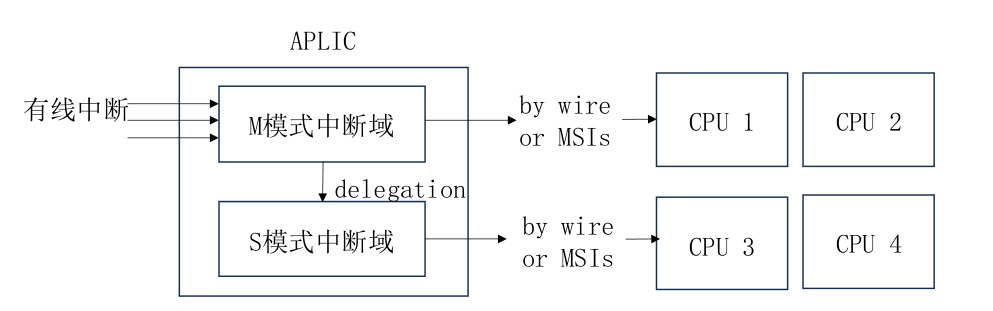

Welcome to hvisor!
Hello~
Welcome to hvisor!
hvisor is a lightweight Type-1 hypervisor written in Rust, offering efficient resource management and low-overhead virtualization performance.
Features
- Cross-platform support: Supports multiple architectures including AARCH64, RISC-V, and LoongArch.
- Lightweight: Focuses on core virtualization functionalities, avoiding unnecessary complexity found in traditional virtualization solutions, suitable for resource-constrained environments.
- Efficient: Runs directly on hardware without the need for an operating system layer, providing near-native performance.
- Security: Rust is known for its memory safety and concurrent programming model, helping to reduce common system-level programming errors such as memory leaks and data races.
- Fast startup: Designed with simplicity in mind, it has a short startup time, suitable for scenarios requiring rapid deployment of virtualization.
Main Functions
- Virtual Machine Management: Provides basic management functions for creating, starting, stopping, and deleting virtual machines.
- Resource Allocation and Isolation: Supports efficient allocation and management of CPU, memory, and I/O devices, using virtualization technology to ensure isolation between different virtual machines, enhancing system security and stability.
Use Cases
- Edge Computing: Suitable for running on edge devices, providing virtualization support for IoT and edge computing scenarios.
- Development and Testing: Developers can quickly create and destroy virtual machine environments for software development and testing.
- Security Research: Provides an isolated environment for security research and malware analysis.
hvisor currently supported hardware platforms
- QEMU
hvisor upcoming hardware platforms
- OKMX8MP-C
Running hvisor on QEMU
1. Install Cross Compiler aarch64-none-linux-gnu-10.3
URL: https://developer.arm.com/downloads/-/gnu-a
Tool selection: AArch64 GNU/Linux target (aarch64-none-linux-gnu)
wget https://armkeil.blob.core.windows.net/developer/Files/downloads/gnu-a/10.3-2021.07/binrel/gcc-arm-10.3-2021.07-x86_64-aarch64-none-linux-gnu.tar.xz
tar xvf gcc-arm-10.3-2021.07-x86_64-aarch64-none-linux-gnu.tar.xz
ls gcc-arm-10.3-2021.07-x86_64-aarch64-none-linux-gnu/bin/
Once installed, remember the path, for example: /home/tools/gcc-arm-10.3-2021.07-x86_64-aarch64-none-linux-gnu/bin/aarch64-none-linux-gnu-, this path will be used later.
2. Compile and Install QEMU 7.2.12
# Install required dependencies for compilation
sudo apt install autoconf automake autotools-dev curl libmpc-dev libmpfr-dev libgmp-dev \
gawk build-essential bison flex texinfo gperf libtool patchutils bc \
zlib1g-dev libexpat-dev pkg-config libglib2.0-dev libpixman-1-dev libsdl2-dev \
git tmux python3 python3-pip ninja-build
# Download the source code
wget https://download.qemu.org/qemu-7.2.12.tar.xz
# Extract
tar xvJf qemu-7.2.12.tar.xz
cd qemu-7.2.12
# Generate configuration file
./configure --enable-kvm --enable-slirp --enable-debug --target-list=aarch64-softmmu,x86_64-softmmu
# Compile
make -j$(nproc)
Then edit the ~/.bashrc file, add a few lines at the end of the file:
# Note that the parent directory of qemu-7.2.12 can be adjusted flexibly according to your actual installation location
export PATH=$PATH:/path/to/qemu-7.2.12/build
Then you can update the system path in the current terminal by source ~/.bashrc, or simply restart a new terminal. At this point, you can confirm the qemu version:
qemu-system-aarch64 --version # Check the version
Note, the above dependencies may not be complete, for example:
- If
ERROR: pkg-config binary 'pkg-config' not foundoccurs, you can install thepkg-configpackage;- If
ERROR: glib-2.48 gthread-2.0 is required to compile QEMUoccurs, you can install thelibglib2.0-devpackage;- If
ERROR: pixman >= 0.21.8 not presentoccurs, you can install thelibpixman-1-devpackage.
If you encounter an error ERROR: Dependency "slirp" not found, tried pkgconfig when generating the configuration file:
Download the https://gitlab.freedesktop.org/slirp/libslirp package and install it according to the readme.
3. Compile Linux Kernel 5.4
Before compiling the root linux image, change the CONFIG_IPV6 and CONFIG_BRIDGE config in the .config file to y to support creating bridges and tap devices in root linux. The specific operations are as follows:
git clone https://github.com/torvalds/linux -b v5.4 --depth=1
cd linux
git checkout v5.4
# Modify the CROSS_COMPILE path according to the path of the cross compiler installed in the first step
make ARCH=arm64 CROSS_COMPILE=/root/gcc-arm-10.3-2021.07-x86_64-aarch64-none-linux-gnu/bin/aarch64-none-linux-gnu- defconfig
# Add a line in .config
CONFIG_BLK_DEV_RAM=y
# Modify two CONFIG parameters in .config
CONFIG_IPV6=y
CONFIG_BRIDGE=y
# Compile, modify the CROSS_COMPILE path according to the path of the cross compiler installed in the first step
make ARCH=arm64 CROSS_COMPILE=/root/gcc-arm-10.3-2021.07-x86_64-aarch64-none-linux-gnu/bin/aarch64-none-linux-gnu- Image -j$(nproc)
If there is an error when compiling linux:
/usr/bin/ld: scripts/dtc/dtc-parser.tab.o:(.bss+0x20): multiple definition of `yylloc'; scripts/dtc/dtc-lexer.lex.o:(.bss+0x0): first defined hereThen modify
scripts/dtc/dtc-lexer.lex.cunder the linux folder, addexternbeforeYYLTYPE yylloc;. Compile again, if you encounter the error: openssl/bio.h: No such file or directory, then executesudo apt install libssl-dev
Once compiled, the kernel file is located at: arch/arm64/boot/Image. Remember the path of the entire linux folder, for example: home/korwylee/lgw/hypervisor/linux, we will use this path again in step 7.
4. Build File System Based on Ubuntu 20.04 Arm64 Base
This section can be omitted, you can directly download the ready-made disk image to use. https://blog.syswonder.org/#/2024/20240415_Virtio_devices_tutorial
We use Ubuntu 20.04 (22.04 is also possible) to build the root file system.
Download: ubuntu-base-20.04.5-base-arm64.tar.gz
Link: http://cdimage.ubuntu.com/ubuntu-base/releases/20.04/release/ubuntu-base-20.04.5-base-arm64.tar.gz
wget http://cdimage.ubuntu.com/ubuntu-base/releases/20.04/release/ubuntu-base-20.04.5-base-arm64.tar.gz
mkdir rootfs
# Create a 1G size ubuntu.img, you can modify the count to change the img size
dd if=/dev/zero of=ubuntu-20.04-rootfs_ext4.img bs=1M count=1024 oflag=direct
mkfs.ext4 ubuntu-20.04-rootfs_ext4.img
# Put ubuntu.tar.gz into the ubuntu.img that has been mounted on rootfs
sudo mount -t ext4 ubuntu-20.04-rootfs_ext4.img rootfs/
sudo tar -xzf ubuntu-base-20.04.5-base-arm64.tar.gz -C rootfs/
# Let rootfs bind and obtain some information and hardware of the physical machine
# qemu-path is your qemu path
sudo cp qemu-path/build/qemu-system-aarch64 rootfs/usr/bin/
sudo cp /etc/resolv.conf rootfs/etc/resolv.conf
sudo mount -t proc /proc rootfs/proc
sudo mount -t sysfs /sys rootfs/sys
sudo mount -o bind /dev rootfs/dev
sudo mount -o bind /dev/pts rootfs/dev/pts
# Executing this command may report an error, please refer to the solution below
sudo chroot rootfs
sudo apt-get install git sudo vim bash-completion \
kmod net-tools iputils-ping resolvconf ntpdate
# The following content surrounded by # can be done or not
###################
adduser arm64
adduser arm64 sudo
echo "kernel-5_4" >/etc/hostname
echo "127.0.0.1 localhost" >/etc/hosts
echo "127.0.0.1 kernel-5_4">>/etc/hosts
dpkg-reconfigure resolvconf
dpkg-reconfigure tzdata
###################
exit
sudo umount rootfs/proc
sudo umount rootfs/sys
sudo umount rootfs/dev/pts
sudo umount rootfs/dev
sudo umount rootfs
Finally, unmount the mount to complete the production of the root file system.
When executing `sudo chroot .
Install QEMU
Install QEMU 7.2.12:
wget https://download.qemu.org/qemu-7.2.12.tar.xz
# Extract
tar xvJf qemu-7.2.12.tar.xz
cd qemu-7.2.12
# Configure Riscv support
./configure --target-list=riscv64-softmmu,riscv64-linux-user
make -j$(nproc)
# Add to environment variable
export PATH=$PATH:/path/to/qemu-7.2.12/build
# Test if the installation is successful
qemu-system-riscv64 --version
Install Cross Compiler
The RISC-V cross compiler needs to be obtained and compiled from riscv-gnu-toolchain.
# Install necessary tools
sudo apt-get install autoconf automake autotools-dev curl python3 python3-pip libmpc-dev libmpfr-dev libgmp-dev gawk build-essential bison flex texinfo gperf libtool patchutils bc zlib1g-dev libexpat-dev ninja-build git cmake libglib2.0-dev libslirp-dev
git clone https://github.com/riscv/riscv-gnu-toolchain
cd riscv-gnu-toolchain
git rm qemu
git submodule update --init --recursive
# The above operation will occupy more than 5GB of disk space
# If git reports a network error, you can execute:
git config --global http.postbuffer 524288000
Then start compiling the toolchain:
cd riscv-gnu-toolchain
mkdir build
cd build
../configure --prefix=/opt/riscv64
sudo make linux -j $(nproc)
# After compilation, add the toolchain to the environment variable
echo 'export PATH=/opt/riscv64/bin:$PATH' >> ~/.bashrc
source ~/.bashrc
This gives you the riscv64-unknown-linux-gnu toolchain.
Compile Linux
git clone https://github.com/torvalds/linux -b v6.2 --depth=1
cd linux
git checkout v6.2
make ARCH=riscv CROSS_COMPILE=riscv64-unknown-linux-gnu- defconfig
make ARCH=riscv CROSS_COMPILE=riscv64-unknown-linux-gnu- modules -j$(nproc)
# Start compiling
make ARCH=riscv CROSS_COMPILE=riscv64-unknown-linux-gnu- Image -j$(nproc)
Create Ubuntu Root File System
wget http://cdimage.ubuntu.com/ubuntu-base/releases/20.04/release/ubuntu-base-20.04.2-base-riscv64.tar.gz
mkdir rootfs
dd if=/dev/zero of=riscv_rootfs.img bs=1M count=1024 oflag=direct
mkfs.ext4 riscv_rootfs.img
sudo mount -t ext4 riscv_rootfs.img rootfs/
sudo tar -xzf ubuntu-base-20.04.2-base-riscv64.tar.gz -C rootfs/
sudo cp /path-to-qemu/build/qemu-system-riscv64 rootfs/usr/bin/
sudo cp /etc/resolv.conf rootfs/etc/resolv.conf
sudo mount -t proc /proc rootfs/proc
sudo mount -t sysfs /sys rootfs/sys
sudo mount -o bind /dev rootfs/dev
sudo mount -o bind /dev/pts rootfs/dev/pts
sudo chroot rootfs
# After entering chroot, install necessary packages:
apt-get update
apt-get install git sudo vim bash-completion \
kmod net-tools iputils-ping resolvconf ntpdate
exit
sudo umount rootfs/proc
sudo umount rootfs/sys
sudo umount rootfs/dev/pts
sudo umount rootfs/dev
sudo umount rootfs
Run hvisor
Place the prepared root file system and Linux kernel image in the specified location in the hvisor directory, and execute make run ARCH=riscv64 in the root directory of hvisor
By default, it uses PLIC, execute make run ARCH=riscv64 IRQ=aia to enable AIA specification
Possible Issues
After running Linux, the display shows /bin/sh: 0: can't access tty; job control turned off, enter bash in the console
NXP Launches Jailhouse
Date: 2024/2/25 Updated: 2024/3/13
Authors: Yang Junyi, Chen Xingyu
Overall Approach:
- Boot the first Linux using an SD card, it is recommended to use Ubuntu's rootfs and set up the network for convenience in package installation.
- Boot the root Linux and compile the Linux kernel and Jailhouse.
- Restart, modify the root dtb, and boot the root Linux.
- Jailhouse boots non-root Linux, which is the Linux on the eMMC (original manufacturer's Linux), specifying the rootfs as eMMC.
1. Creating an Ubuntu SD Card Image
wget https://cdimage.ubuntu.com/ubuntu-base/releases/18.04/release/ubuntu-base-18.04.5-base-arm64.tar.gz
tar zxvf ubuntu-base-18.04.5-base-arm64.tar.gz
cd ubuntu-base-18.04.5-base-arm64
# chroot in x86
sudo apt-get install qemu
sudo cp /usr/bin/qemu-aarch64-static usr/bin/
sudo mount /sys ./sys -o bind
sudo mount /proc ./proc -o bind
sudo mount /dev ./dev -o bind
sudo mv etc/resolv.conf etc/resolv.conf.saved
sudo cp /etc/resolv.conf etc
sudo LC_ALL=C chroot . /bin/bash
# chroot in arm
sudo arch-chroot .
sudo apt-get update
# Install required packages such as vim, build-essential, python3, python3-dev, gcc, g++, git, make, kmod.
sudo apt-get install <PKG_NAME>
exit
# If using arch-chroot, manual umount is not needed
sudo umount ./sys
sudo umount ./proc
sudo umount ./dev
mv etc/resolv.conf.saved etc/resolv.conf
## Additionally, copy Linux and jailhouse to the SD card, change to local path.
sudo cp -r LINUX_DEMO ubuntu-base-18.04.5-base-arm64/home #source path see Linux kernel compilation section
sudo cp -r Jailhouse_DEMO ubuntu-base-18.04.5-base-arm64/home
# Then copy the ubuntu-base-18.04.5-base-arm64 directory into the SD card as rootfs.
# It is recommended to complete the "Compilation" section before copying, or you can enter the system and then compile
sudo fdisk -l # determine the SD card device name
sudo mount /dev/sdb1 /mnt
sudo cp -r ubuntu-base-18.04.5-base-arm64 /mnt
2. Compile NXP Linux Kernel
The source code can be obtained from the manufacturer's materials (source location: /OKMX8MP-C_Linux5.4.70+Qt5.15.0_User Information_R5 (update date: 20231012)/Linux/source/OK8MP-linux-sdk/OK8MP-linux-kernel)
This step can be done in a chroot environment or by first using an existing Image and dtb to boot the board (official files provide an Image and OK8MP-C.dtb)
Add Root Device Tree
The device tree storage location is arch/arm64/boot/dts/freescale, add a new device tree OK8MP-C-root.dts, mainly modify to disable usdhc3 (eMMC) and uart4, and share pins between usdhc3 and usdhc2 to facilitate booting non-root-linux
Content:
// SPDX-License-Identifier: (GPL-2.0+ OR MIT)
/*
* Copyright 2019 NXP
*/
/dts-v1/;
#include "OK8MP-C.dts"
/ {
interrupt-parent = <&gic>;
resmem: reserved-memory {
#address-cells = <2>;
#size-cells = <2>;
ranges;
};
};
&cpu_pd_wait {
/delete-property/ compatible;
};
&clk {
init-on-array = <IMX8MP_CLK_USDHC3_ROOT
IMX8MP_CLK_NAND_USDHC_BUS
IMX8MP_CLK_HSIO_ROOT
IMX8MP_CLK_UART4_ROOT
IMX8MP_CLK_OCOTP_ROOT>;
};
&{/busfreq} {
status = "disabled";
};
&{/reserved-memory} { // Reserved jailhouse memory area
jh_reserved: jh@fdc00000 {
no-map;
reg = <0 0xfdc00000 0x0 0x400000>;
};
loader_reserved: loader@fdb00000 {
no-map;
reg = <0 0xfdb00000 0x0 0x00100000>;
};
ivshmem_reserved: ivshmem@fda00000 {
no-map;
reg = <0 0xfda00000 0x0 0x00100000>;
};
ivshmem2_reserved: ivshmem2@fd900000 {
no-map;
reg = <0 0xfd900000 0x0 0x00100000>;
};
pci_reserved: pci@fd700000 {
no-map;
reg = <0 0xfd700000 0x0 0x00200000>;
};
inmate_reserved: inmate@60000000 {
no-map;
reg = <0 0x60000000 0x0 0x10000000>;
};
};
&iomuxc {
pinctrl_uart4: uart4grp {
fsl,pins = <
MX8MP_IOMUXC_UART4_RXD__UART4_DCE_RX 0x49
MX8MP_IOMUXC_UART4_TXD__UART4_DCE_TX 0x49
>;
};
};
&usdhc3 { // eMMC: mmc2, since this eMMC is nonroot, root should not occupy it, so disable it
status = "disabled";
};
&uart4 { // Also disable this, used for nonroot boot.
/delete-property/ dmas;
/delete-property/ dma-names;
pinctrl-names = "default";
pinctrl-0 = <&pinctrl_uart4>;
status = "disabled";
};
&uart2 { // uart1=ttymxc0 uart4=ttymxc3 default for ttymxc1.
/* uart4 is used by the 2nd OS, so configure pin and clk */
pinctrl-0 = <&pinctrl_uart2>, <&pinctrl_uart4>;
assigned-clocks = <&clk IMX8MP_CLK_UART4>;
assigned-clock-parents = <&clk IMX8MP_CLK_24M>;
};
&usdhc2 {
pinctrl-0 = <&pinctrl_usdhc3>, <&pinctrl_usdhc2>, <&pinctrl_usdhc2_gpio>;
pinctrl-1 = <&pinctrl_usdhc3>, <&pinctrl_usdhc2_100mhz>, <&pinctrl_usdhc2_gpio>;
pinctrl-2 = <&pinctrl_usdhc3>, <&pinctrl_usdhc2_200mhz>, <&pinctrl_usdhc2_gpio>;
};
Kernel Compilation
# First, refer to the previous chroot and enter the source directory
make OK8MP-C_defconfig # Configure default config
make -j$(nproc) ARCH=arm64 # Compilation takes about 15 minutes
If the gcc version is too high, it might cause yylloc issues. You can downgrade the version or add 'extern' before yylloc in scripts/dtc/dtc-lexer.lex.c_shipped
If there are definition conflicts between jailhouse and the kernel, prioritize the kernel and modify jailhouse accordingly
Compile Jailhouse
Jailhouse version uses v0.12 then manually add dts and configuration files
git checkout v0.12
.c file addition location configs/arm64
.dts file addition location configs/arm64/dts
imx8mp.c
/*
* i.MX8MM Target
*
* Copyright 2018 NXP
*
* Authors:
* Peng Fan <peng.fan@nxp.com>
*
* This work is licensed under the terms of the GNU GPL, version 2. See
* the COPYING file in the top-level directory.
*
* Reservation via device tree: reg = <0x0 0xffaf0000 0x0 0x510000>
*/
#include <jailhouse/types.h>
#include <jailhouse/cell-config.h>
struct {
struct jailhouse_system header;
__u64 cpus[1];
struct jailhouse_memory mem_regions[15];
struct jailhouse_irqchip irqchips[3];
struct jailhouse_pci_device pci_devices[2];
} __attribute__((packed)) config = {
.header = {
.signature = JAILHOUSE_SYSTEM_SIGNATURE,
.revision = JAILHOUSE_CONFIG_REVISION,
.flags = JAILHOUSE_SYS_VIRTUAL_DEBUG_CONSOLE,
.hypervisor_memory = {
.phys_start = 0xfdc00000,
.size = 0x00400000,
},
.debug_console = {
.address = 0x30890000,
.size = 0x1000,
.flags = JAILHOUSE_CON_TYPE_IMX |
JAILHOUSEFPGA zcu102
Author: 杨竣轶(Jerry) github.com/comet959
# Before, Install vivado 2022.2 software
# Ubuntu 20.04 can work fine
sudo apt update
git clone https://github.com/U-interrupt/uintr-rocket-chip.git
cd uintr-rocket-chip
git submodule update --init --recursive
export RISCV=/opt/riscv64
git checkout 98e9e41
vim digilent-vivado-script/config.ini # Env Config
make checkout
make clean
make build
# Use vivado to open the vivado project, then change the top file, run synthesis, run implementation, generate bitstream.
# Connect the zcu102 - Jtag and Uart on your PC.
# Use dd command to flash the image include boot and rootfs part.
# Change the boot button mode to (On Off Off Off)
# Boot the power.
sudo screen /dev/ttyUSB0 115200 # Aarch64 Core Uart
sudo screen /dev/ttyUSB2 115200 # Riscv Core Uart
# On /dev/ttyUSB0
cd uintr-rocket-chip
./load-and-reset.sh
# Focus on ttyUSB2, then you will see the Riscv Linux Boot Msg.
Enabling H Extension in RocketChip
vim path/to/repo/common/src/main/scala/Configs.scala
// change
class UintrConfig extends Config(
new WithNBigCores(4) ++
new WithNExtTopInterrupts(6) ++
new WithTimebase((BigInt(10000000))) ++ // 10 MHz
new WithDTS("freechips.rocketchip-unknown", Nil) ++
new WithUIPI ++
new WithCustomBootROM(0x10000, "../common/boot/bootrom/bootrom.img") ++
new WithDefaultMemPort ++
new WithDefaultMMIOPort ++
new WithDefaultSlavePort ++
new WithoutTLMonitors ++
new WithCoherentBusTopology ++
new BaseSubsystemConfig
)
// to
class UintrConfig extends Config(
new WithHypervisor ++
new WithNBigCores(4) ++
new WithNExtTopInterrupts(6) ++
new WithTimebase((BigInt(10000000))) ++ // 10 MHz
new WithDTS("freechips.rocketchip-unknown", Nil) ++
new WithUIPI ++
new WithCustomBootROM(0x10000, "../common/boot/bootrom/bootrom.img") ++
new WithDefaultMemPort ++
new WithDefaultMMIOPort ++
new WithDefaultSlavePort ++
new WithoutTLMonitors ++
new WithCoherentBusTopology ++
new BaseSubsystemConfig
)
Booting hvisor on Loongson 3A5000 Motherboard (7A2000)
Han Yulu enkerewpo@hotmail.com
Updated: December 4, 2024
Step 1: Obtain and compile the hvisor source code
Clone the code locally:
git clone -b dev-loongarch https://github.com/syswonder/hvisor # dev-loongarch branch
make ARCH=loongarch64
After compilation, you can find the stripped hvisor.bin in the target directory (the file path will be displayed in the last line of the compilation output).
Obtain the vmlinux.bin image
Please download the latest released hvisor default Loongson Linux image from https://github.com/enkerewpo/linux-hvisor-loongarch64/releases (including root Linux kernel + root Linux dtb + root Linux rootfs, where root Linux rootfs includes non-root Linux + non-root Linux dtb + non-root Linux rootfs). If you need to compile the Linux kernel and rootfs yourself, refer to the arch/loongarch directory in the repository for hvisor-related device trees and the buildroot environment I ported for 3A5000 (https://github.com/enkerewpo/buildroot-loongarch64). If you need to manually compile hvisor-tool, refer to https://github.com/enkerewpo/hvisor-tool. For the compilation order and script invocation process of all environments, refer to the code inside the world target in the Makefile.1 file (https://github.com/enkerewpo/hvisor_uefi_packer/blob/main/Makefile.1), and compile everything by running the ./make_world script. If you need to manually compile these, you need to modify the corresponding code path variables in Makefile.1, including:
HVISOR_LA64_LINUX_DIR = ../hvisor-la64-linux
BUILDROOT_DIR = ../buildroot-loongarch64
HVISOR_TOOL_DIR = ../hvisor-tool
Then run ./make_world. Please note that the first compilation of Linux and buildroot may take a long time (possibly up to several tens of minutes, depending on your machine performance).
Obtain hvisor UEFI Image Packer
Since the 3A5000 and subsequent Series 3 CPUs' motherboards use UEFI boot, hvisor can only be booted via an EFI image method. Clone the repository https://github.com/enkerewpo/hvisor_uefi_packer locally:
make menuconfig # Configure for your local loongarch64 gcc toolchain prefix, hvisor.bin path, vmlinux.bin path
# Modify make_image's HVISOR_SRC_DIR=../hvisor to your actual hvisor source code path, then run the script
./make_image
# You will get the BOOTLOONGARCH64.EFI file
The obtained BOOTLOONGARCH64.EFI must be placed in the first FAT32 partition of the USB drive at /EFI/BOOT/BOOTLOONGARCH64.EFI. Then insert the USB drive to boot and enter hvisor, which will automatically start root Linux.
Since the metadata related to root Linux (loading address, memory area, etc.) is hardcoded in the hvisor source code (src/platform/ls3a5000_loongarch64.rs), if you are manually compiling the Linux kernel, you need to modify the configuration here and recompile hvisor.
Board Boot
Power on the motherboard, press F12 to enter the UEFI Boot Menu, select your inserted USB drive and press Enter. It will automatically boot hvisor and enter the root Linux bash environment.
Start nonroot
If you are using the related images provided in the release, after booting, enter in the root Linux bash:
./daemon.sh
./linux2_virtio.sh
This will automatically start nonroot (some related configuration files are located in the root Linux /tool directory, including the nonroot zone configuration JSON and virtio configuration JSON files provided to hvisor-tool). Afterwards, a screen process will open connecting to nonroot Linux's virtio-console, displaying a bash with "nonroot" printed. You can use the CTRL+A D shortcut key to detach (remember the displayed screen session name) during screen use. To return to nonroot Linux, run:
screen -r {the full name of the session just now or just enter the first few numbers}
This will return you to the nonroot Linux bash.
This directory is mainly related to ZCU102, and the introduction is as follows:
- How to use Qemu to simulate Xilinx ZynqMP ZCU102
- How to boot hvisor root linux and nonroot linux on Qemu ZCU102 and ZCU102 physical development board.
Qemu ZCU102 hvisor Startup
Install Petalinux
- Install Petalinux 2024.1 Please note that this article uses version 2024.1 as an example, which does not mean that other versions are not possible, but other versions have not been verified, and tests have found that Petalinux has a strong dependency on the operating system, so please install the version of Petalinux suitable for your operating system.
- Place the downloaded
petalinux.runfile in the directory where you want to install it, add execution permissions to it, and then run the installer directly with./petalinux.run. - The installer will automatically detect the required environment, and if it does not meet the requirements, it will prompt for the missing environment, just need to
apt installone by one. - After installation, you need to enter the installation directory and manually
source settings.shto add environment variables before using Petalinux each time. If it is too troublesome, you can add this command to~/.bashrc.
Install ZCU102 BSP
- Download the BSP corresponding to the Petalinux version, in the example it is ZCU102 BSP 2024.1
- Activate the Petalinux environment, i.e.,
source settings.shin the Petalinux installation directory. - Create a Petalinux Project based on BSP:
petalinux-create -t project -s xilinx-zcu102-v2024.1-05230256.bsp - This will create a
xilinx-zcu102-2024.1folder, which contains the parameters needed for QEMU to simulate ZCU102 (device tree), as well as pre-compiled Linux images, device trees, Uboot, etc. that can be directly uploaded to the board.
Compile Hvisor
Refer to "Running Hvisor on Qemu" for setting up the environment required to compile Hvisor, then in the hvisor directory, execute:
make ARCH=aarch64 LOG=info FEATURES=platform_zcu102,gicv2 cp
to compile. The directory /target/aarch64-unknown-none (may vary)/debug/hvisor is the required hvisor image.
Prepare Device Tree
Use Existing Device Tree
In the image/devicetree directory of Hvisor, there is zcu102-root-aarch64.dts, which is a device tree file that has been tested to boot RootLinux, compile it.
dtc -I dts -O dtb -o zcu102-root-aarch64.dtb zcu102-root-aarch64.dts
If the dtc command is invalid, install device-tree-compiler.
sudo apt-get install device-tree-compiler
Prepare Device Tree Yourself
If you have custom requirements for the device, it is recommended to prepare the device tree yourself. You can decompile the pre-built/linux/images/system.dtb in the ZCU102 BSP to get the complete device tree, based on zcu102-root-aarch64.dts for additions and deletions.
Prepare Image
Use Existing Image
It is recommended to use the pre-built/linux/images/Image from the ZCU102 BSP as the Linux kernel to boot on ZCU102, as its driver configuration is complete.
Compile Yourself
After testing, the support for ZYNQMP in the Linux source code before version 5.15 is not comprehensive, it is not recommended to use versions before this for compilation, you can compile directly according to the general compilation process in later versions, as the basic support for ZYNQMP in the source code is enabled by default. Specific compilation operations are as follows:
- Visit the linux-xlnx official website to download the Linux source code, it is best to download
zynqmp-soc-for-v6.3. tar -xvf zynqmp-soc-for-v6.3to unzip the source code- Enter the unzipped directory, execute the following command to use the default configuration,
make ARCH=arm64 CROSS_COMPILE=aarch64-linux-gnu- defconfig - Compile:
make ARCH=arm64 CROSS_COMPILE=aarch64-linux-gnu- Image -j$(nproc) - After compilation, the directory
arch/arm64/boot/Imageis the required image.
Enable QEMU Simulation
- Activate the Petalinux environment, i.e.,
source settings.shin the Petalinux installation directory. - Enter the
xilinx-zcu102-2024.1folder, use the following command to start hvisor on the QEMU-simulated ZCU102, the file paths need to be modified according to your actual situation.
# QEMU parameter passing
petalinux-boot --qemu --prebuilt 2 --qemu-args '-device loader,file=hvisor,addr=0x40400000,force-raw=on -device loader,
file=zcu102-root-aarch64.dtb,addr=0x40000000,force-raw=on -device loader,file=zcu102-root-aarch64.dtb,addr=0x04000000,
force-raw=on -device loader,file=/home/hangqi-ren/Image,addr=0x00200000,force-raw=on -drive if=sd,format=raw,index=1,
file=rootfs.ext4'
# Start hvisor
bootm 0x40400000 - 0x40000000
ZCU102 hvisor Multi-mode Boot
Booting Hvisor on ZCU102 Development Board in SD Mode
Preparing the SD Card
- Prepare a standard SD card, partition it into a Boot partition (FAT32) and the rest as filesystem partitions (EXT4). For Windows partitions, you can use DiskGenius, and for Linux partitions, you can use fdisk or mkfs.
- Prepare a filesystem and copy its contents to any filesystem partition. You can refer to "NXPIMX8" for creating an Ubuntu filesystem or directly use the filesystem from the ZCU102 BSP.
- Copy
zcu102-root-aarch64.dtb,Image, andhvisorto the Boot partition. - In SD mode, it is necessary to provide ATF and Uboot from the SD card, so copy
boot.scrandBOOT.BINfrom the ZCU102 BSP to the BOOT partition.
Booting ZCU102
- Set ZCU102 to SD mode, insert the SD card, connect the serial port, and power on.
- Press any key to interrupt the Uboot auto script and run the following commands to boot hvisor and root Linux:
fatload mmc 0:1 0x40400000 hvisor;fatload mmc 0:1 0x40000000 zcu102-root-aarch64.dtb
fatload mmc 0:1 0x04000000 zcu102-root-aarch64.dtb;fatload mmc 0:1 0x00200000 Image;bootm 0x40400000 - 0x40000000
- If successful, you will see hvisor and Linux information on the serial port and finally enter the filesystem.
Booting Hvisor on ZCU102 Development Board in Jtag Mode
First, connect the two cables that come with the board to the JTAG and UART interfaces of the board, and connect the other end to the PC via USB.
Then open a petalinux project in the command line, ensure the project has been compiled and generated the corresponding boot files (vmlinux, BOOT.BIN, etc.), and then enter the project root directory and run:
petalinux-boot --jtag --prebuilt 2
Where prebuilt represents the boot level:
- Level 1: Only download the FPGA bitstream, boot FSBL and PMUFW
- Level 2: Download FPGA bitstream and boot UBOOT, and start FSBL, PMUFW, and TF-A (Trusted Firmware-A)
- Level 3: Download and boot Linux, and load or boot FPGA bitstream, FSBL, PMUFW, TF-A, UBOOT
Afterward, JTAG will download the corresponding files to the board (saving to the specified memory address) and start the corresponding bootloader. For the specific official UBOOT default script, see the boot.scr file in the project image directory.
Since hvisor requires separate UBOOT commands and a custom-made fitImage to boot, please refer to UBOOT FIT Image Creation, Loading, and Booting.
After making the fitImage, replace the files in the petalinux images generation directory (Image.ub), so that JTAG loads our custom-made fitImage to the default FIT image load address configured in the petalinux project. This way, when JTAG starts, it will load our fitImage via the JTAG line to the corresponding address in the board memory, and then extract and bootm through the uboot command line.
Another UART line can be used to observe the output of the ZCU102 board (including FSBL, UBOOT, Linux, etc.), which can be viewed through serial port tools such as screen, gtkterm, termius, minicom.
Please Note
Since petalinux specifies some fixed memory addresses, such as the default loading addresses for the Linux kernel, fitImage, and DTB (configurable during petalinux project compilation), there is an issue where if the root Linux dtb in its has the same loading address as during petalinux compilation, it will cause the dtb to be overwritten with the default petalinux dtb, preventing root Linux from booting correctly. Therefore, it is necessary to specify different addresses from the default petalinux dtb/fitImage loading addresses during compilation to prevent other issues.
References
[1] PetaLinux Tools Documentation: Reference Guide (UG1144).https://docs.amd.com/r/2023.1-English/ug1144-petalinux-tools-reference-guide/Booting-a-PetaLinux-Image-on-Hardware-with-JTAG [2] Trusted Firmware-A Documentation.https://trustedfirmware-a.readthedocs.io/en/latest/
ZCU102 NonRoot Boot
- Compile hvisor-tool using the Linux kernel source code used during the Root boot. The detailed compilation process can be referred to in Readme.
- Prepare the required
virtio_cfg.jsonandzone1_linux.jsonfor NonRoot boot. You can directly use theexample/zcu102-aarch64in the hvisor-tool directory, which has been verified to ensure it can boot. - Prepare the Linux kernel Image, filesystem rootfs, and device tree linux1.dtb needed for NonRoot. The kernel and filesystem can be the same as Root, while Linux1.dtb should be configured as needed, or you can use
images/aarch64/devicetree/zcu102-nonroot-aarch64.dtsfrom the hvisor directory. - Copy
hvisor.ko, hvisor, virtio_cfg, zone1_linux.json, linux1.dtb, Image, rootfs.ext4to the filesystem used by Root Linux. - Enter the following commands in RootLinux to start NonRoot:
# Load kernel module
insmod hvisor.ko
# Create virtio device
nohup ./hvisor virtio start virtio_cfg.json &
# Start NonRoot based on the json configuration file
./hvisor zone start zone1_linux.json
# View the output of NonRoot and interact.
screen /dev/pts/0
For more operation details, refer to hvisor-tool Readme
UBOOT FIT Image Creation, Loading, and Booting
wheatfox (enkerewpo@hotmail.com)
This article introduces the basic knowledge related to FIT images, as well as how to create, load, and boot FIT images.
ITS Source File
ITS is the source code for generating FIT images (FIT Image) in uboot, namely Image Tree Source, which uses the Device Tree Source (DTS) syntax format. FIT images can be generated using the mkimage tool provided by uboot.
In the ZCU102 port of hvisor, a FIT image is used to package hvisor, root linux, root dtb, and other files into one fitImage, facilitating booting on QEMU and actual hardware.
The ITS file for the ZCU102 platform is located at scripts/zcu102-aarch64-fit.its:
/dts-v1/;
/ {
description = "FIT image for HVISOR with Linux kernel, root filesystem, and DTB";
images {
root_linux {
description = "Linux kernel";
data = /incbin/("__ROOT_LINUX_IMAGE__");
type = "kernel";
arch = "arm64";
os = "linux";
...
};
...
root_dtb {
description = "Device Tree Blob";
data = /incbin/("__ROOT_LINUX_DTB__");
type = "flat_dt";
...
};
hvisor {
description = "Hypervisor";
data = /incbin/("__HVISOR_TMP_PATH__");
type = "kernel";
arch = "arm64";
...
};
};
configurations {
default = "config@1";
config@1 {
description = "default";
kernel = "hvisor";
fdt = "root_dtb";
};
};
};
Here, __ROOT_LINUX_IMAGE__, __ROOT_LINUX_DTB__, and __HVISOR_TMP_PATH__ will be replaced with actual paths by the sed command in the Makefile. In the ITS source code, it is mainly divided into images and configurations sections. The images section defines the files to be packaged, and the configurations section defines how to combine these files. During UBOOT boot, it will automatically load the corresponding files to the specified address according to the default configuration in configurations, and multiple configurations can be set to support loading different configuration images at boot time.
Makefile corresponding command for mkimage:
.PHONY: gen-fit
gen-fit: $(hvisor_bin) dtb
@if [ ! -f scripts/zcu102-aarch64-fit.its ]; then \
echo "Error: ITS file scripts/zcu102-aarch64-fit.its not found."; \
exit 1; \
fi
$(OBJCOPY) $(hvisor_elf) --strip-all -O binary $(HVISOR_TMP_PATH)
# now we need to create the vmlinux.bin
$(GCC_OBJCOPY) $(ROOT_LINUX_IMAGE) --strip-all -O binary $(ROOT_LINUX_IMAGE_BIN)
@sed \
-e "s|__ROOT_LINUX_IMAGE__|$(ROOT_LINUX_IMAGE_BIN)|g" \
-e "s|__ROOT_LINUX_ROOTFS__|$(ROOT_LINUX_ROOTFS)|g" \
-e "s|__ROOT_LINUX_DTB__|$(ROOT_LINUX_DTB)|g" \
-e "s|__HVISOR_TMP_PATH__|$(HVISOR_TMP_PATH)|g" \
scripts/zcu102-aarch64-fit.its > temp-fit.its
@mkimage -f temp-fit.its $(TARGET_FIT_IMAGE)
@echo "Generated FIT image: $(TARGET_FIT_IMAGE)"
Please Note
Do not input an Image already packaged by UBOOT into the ITS source file, otherwise it will lead to repackaging! The files pointed to in ITS should be original files (vmlinux, etc.), and mkimage processes each file individually when importing ITS (vmlinux->"Image", then embedded into fitImage)
Booting hvisor and root linux through FIT image in petalinux qemu
Since a fitImage includes all the necessary files, for qemu, you only need to load this file into an appropriate position in memory through the loader.
Then, when qemu starts and enters UBOOT, you can use the following command to boot (modify the specific address according to the actual situation, you can write all lines into one line and copy to UBOOT for booting, or save it to the environment variable bootcmd, UBOOT needs to mount a persistent flash for environment variable storage):
setenv fit_addr 0x10000000; setenv root_linux_load 0x200000;
imxtract ${fit_addr} root_linux ${root_linux_load}; bootm ${fit_addr};
References
[1] Flat Image Tree (FIT). https://docs.u-boot.org/en/stable/usage/fit/
How to Compile
Compiling with Docker
1. Install Docker
sudo snap install docker
You can also refer to the Docker official documentation to install Docker.
2. Build the image
make build_docker
This step builds a Docker image, automatically creating all the dependencies required for compilation.
3. Run the container
make docker
This step starts a container, mounts the current directory into the container, and enters the container's shell.
4. Compile
Execute the following command in the container to compile.
make all
Compiling with Local Environment
1. Install RustUp and Cargo
curl --proto '=https' --tlsv1.2 -sSf https://sh.rustup.rs | \
sh -s -- -y --no-modify-path --profile minimal --default-toolchain nightly
2. Install the toolchain
The toolchain currently used by the project is as follows:
- Rust nightly 2023-07-12
- rustfmt
- clippy
- cargo-binutils
- rust-src
- llvm-tools-preview
- target: aarch64-unknown-none
You can check if these tools are installed on your own, or use the following commands to install:
(1) Install toml-cli and cargo-binutils
cargo install toml-cli cargo-binutils
(2) Install the target platform cross-compilation toolchain
rustup target add aarch64-unknown-none
(3) Parse rust-toolchain.toml to install the Rust toolchain
RUST_VERSION=$(toml get -r rust-toolchain.toml toolchain.channel) && \
Components=$(toml get -r rust-toolchain.toml toolchain.components | jq -r 'join(" ")') && \
rustup install $RUST_VERSION && \
rustup component add --toolchain $RUST_VERSION $Components
(4) Compile
make all
How to Start Root Linux
QEMU
Install Dependencies
1. Install Dependencies
apt-get install -y jq wget build-essential \
libglib2.0-0 libfdt1 libpixman-1-0 zlib1g \
libfdt-dev libpixman-1-dev libglib2.0-dev \
zlib1g-dev ninja-build
1. Download and Extract QEMU
wget https://download.qemu.org/qemu-7.0.0.tar.xz
tar -xvf qemu-${QEMU_VERSION}.tar.xz
2. Conditionally Compile and Install QEMU
Here we only compile QEMU for simulating aarch64. If you need QEMU for other architectures, you can refer to QEMU Official Documentation.
cd qemu-7.0.0 && \
./configure --target-list=aarch64-softmmu,aarch64-linux-user && \
make -j$(nproc) && \
make install
3. Test if QEMU is Successfully Installed
qemu-system-aarch64 --version
Start Root Linux
1. Prepare Root File System and Kernel Image
Place the image file in hvisor/images/aarch64/kernel/, named Image.
Place the Root file system in hvisor/images/aarch64/virtdisk/, named rootfs1.ext4.
2. Start QEMU
Execute the following command in the hviosr directory:
make run
3. Enter QEMU
It will automatically load uboot. After uboot loading is complete, enter bootm 0x40400000 - 0x40000000 to enter Root Linux.
How to Boot NonRoot Linux
Hvisor has properly handled the booting of NonRoot, making it relatively simple to do so, as follows:
-
Prepare the kernel image, device tree, and file system for NonRoot Linux. Place the kernel and device tree in the file system of Root Linux.
-
Specify the serial port and file system to be mounted for NonRoot Linux in the device tree file, as shown below:
chosen {
bootargs = "clk_ignore_unused console=ttymxc3,115200 earlycon=ec_imx6q3,0x30a60000,115200 root=/dev/mmcblk3p2 rootwait rw";
stdout-path = "/soc@0/bus@30800000/serial@30a60000";
};
-
Compile the kernel module and command line tool for Hvisor and place it in the file system of Root Linux.
-
Boot Hvisor's Root Linux and inject the kernel module that was just compiled:
insmod hvisor.ko
- Use the command line tool, here assumed to be named
hvisor, to boot NonRoot Linux.
./hvisor zone start --kernel kernel image,addr=0x70000000 --dtb device tree file,addr=0x91000000 --id virtual machine number (starting from 1)
- Once NonRoot Linux has booted, open the specified serial port to use it.
Configuration and Management of Zones
The hvisor project, as a lightweight hypervisor, uses a Type-1 architecture that allows multiple virtual machines (zones) to run directly on top of hardware. Below is a detailed explanation of the key points of zone configuration and management:
Resource Allocation
Resources such as CPU, memory, devices, and interrupts are statically allocated to each zone, meaning that once allocated, these resources will not be dynamically scheduled between zones.
Root Zone Configuration
The configuration of the root zone is hardcoded inside hvisor, written in Rust language, and presented as a C-style structure HvZoneConfig. This structure contains key information such as zone ID, number of CPUs, memory regions, interrupt information, physical addresses and sizes of the kernel and device tree binaries (DTB).
Non-root Zones Configuration
The configuration of non-root zones is stored in the file system of root Linux, usually represented in JSON format. For example:
{
"arch": "arm64",
"zone_id": 1,
"cpus": [2, 3],
"memory_regions": [
{
"type": "ram",
"physical_start": "0x50000000",
"virtual_start": "0x50000000",
"size": "0x30000000"
},
{
"type": "io",
"physical_start": "0x30a60000",
"virtual_start": "0x30a60000",
"size": "0x1000"
},
{
"type": "virtio",
"physical_start": "0xa003c00",
"virtual_start": "0xa003c00",
"size": "0x200"
}
],
"interrupts": [61, 75, 76, 78],
"kernel_filepath": "./Image",
"dtb_filepath": "./linux2.dtb",
"kernel_load_paddr": "0x50400000",
"dtb_load_paddr": "0x50000000",
"entry_point": "0x50400000"
}
- The
archfield specifies the target architecture (e.g., arm64). cpusis a list indicating the CPU core IDs allocated to the zone.memory_regionsdescribes different types of memory regions along with their physical and virtual start addresses and sizes.interruptslists the interrupt numbers allocated to the zone.kernel_filepathanddtb_filepathindicate the paths of the kernel and device tree binary files.kernel_load_paddranddtb_load_paddrare the physical memory load addresses for the kernel and device tree binaries.entry_pointspecifies the entry point address of the kernel.
The management tool of root Linux is responsible for reading the JSON configuration file and converting it into a C-style structure, which is then passed to hvisor to start non-root zones.
Command Line Tools
Command line tools are management tools affiliated with hvisor, used to create and close other virtual machines on the management virtual machine Root Linux, and are responsible for starting the Virtio daemon, providing Virtio device emulation. The repository address is located at hvisor-tool.
How to Compile
The command line tool currently supports two architectures: arm64 and riscv, and requires a kernel module to be used. Cross-compilation on an x86 host can be used to compile for different architectures.
- arm64 compilation
Execute the following command in the hvisor-tool directory to obtain the command line tool hvisor and kernel module hvisorl.ko for the arm64 architecture.
make all ARCH=arm64 KDIR=xxx
Where KDIR is the source path of Root Linux, used for the compilation of the kernel module.
- riscv compilation
Compile the command line tool and kernel module for the riscv architecture:
make all ARCH=riscv KDIR=xxx
Managing Virtual Machines
Loading the Kernel Module
Before using the command line tool, you need to load the kernel module to facilitate interaction between the user-mode program and Hypervisor:
insmod hvisor.ko
The operation to unload the kernel module is:
rmmod hvisor.ko
Where hvisor.ko is located in the hvisor-tool/driver directory.
Starting a Virtual Machine
On Root Linux, you can create a virtual machine with id 1 using the following command. This command will load the virtual machine's operating system image file Image into the real physical address xxxa, load the virtual machine's device tree file linux2.dtb into the real physical address xxxb, and start it.
./hvisor zone start --kernel Image,addr=xxxa --dtb linux2.dtb,addr=xxxb --id 1
Shutting Down a Virtual Machine
Shut down the virtual machine with id 1:
./hvisor zone shutdown -id 1
Use of VirtIO Devices
Currently, hvisor supports three types of Virtio devices: Virtio block, Virtio net, and Virtio Console, presented to virtual machines other than Root Linux via MMIO. The Virtio device source repository is located at hvisor-tool, compiled and used together with the command line tool. After creating Virtio devices through the command line tool, the Virtio device will become a daemon on Root Linux, and its log information will be output to the nohup.out file.
Creating and Starting Virtio Devices
Before creating Virtio devices through the command line, execute insmod hvisor.ko to load the kernel module.
Virtio blk Device
Execute the following example command on the Root Linux console to create a Virtio blk device:
nohup ./hvisor virtio start \
--device blk,addr=0xa003c00,len=0x200,irq=78,zone_id=1,img=rootfs2.ext4 &
Here --device blk indicates creating a Virtio disk device for use by the virtual machine with id zone_id. This virtual machine will interact with the device through an MMIO region, which starts at addr, with a length of len, the device interrupt number is irq, and the corresponding disk image path is img.
Virtual machines using Virtio devices need to add information about the Virtio mmio node in the device tree.
Virtio net Device
Creating Network Topology
Before using the Virtio net device, a network topology needs to be created in root Linux so that the Virtio net device can connect to the real network card through the Tap device and bridge device. Execute the following commands in root Linux:
mount -t proc proc /proc
mount -t sysfs sysfs /sys
ip link set eth0 up
dhclient eth0
brctl addbr br0
brctl addif br0 eth0
ifconfig eth0 0
dhclient br0
ip tuntap add dev tap0 mode tap
brctl addif br0 tap0
ip link set dev tap0 up
This will create a network topology of tap0 device<-->bridge device<-->real network card.
Starting Virtio net
Execute the following example command on the Root Linux console to create a Virtio net device:
nohup ./hvisor virtio start \
--device net,addr=0xa003600,len=0x200,irq=75,zone_id=1,tap=tap0 &
--device net indicates creating a Virtio network device for use by the virtual machine with id zone_id. This virtual machine will interact with the device through an MMIO region, which starts at addr, with a length of len, the device interrupt number is irq, and it connects to the Tap device named tap.
Virtio console Device
Execute the following example command on the Root Linux console to create a Virtio console device:
nohup ./hvisor virtio start \
--device console,addr=0xa003800,len=0x200,irq=76,zone_id=1 &
--device console indicates creating a Virtio console for use by the virtual machine with id zone_id. This virtual machine will interact with the device through an MMIO region, which starts at addr, with a length of len, the device interrupt number is irq.
Execute cat nohup.out | grep "char device", and you will observe the output char device redirected to /dev/pts/xx. Execute on Root Linux:
screen /dev/pts/xx
This will enter the virtual console and interact with the virtual machine. Press the shortcut key Ctrl +a d to return to the Root Linux terminal. Execute screen -r [session_id] to re-enter the virtual console.
Creating Multiple Virtio Devices
Execute the following command to create Virtio blk, net, and console devices simultaneously, all devices are within one daemon process.
nohup ./hvisor virtio start \
--device blk,addr=0xa003c00,len=0x200,irq=78,zone_id=1,img=rootfs2.ext4 \
--device net,addr=0xa003600,len=0x200,irq=75,zone_id=1,tap=tap0 \
--device console,addr=0xa003800,len=0x200,irq=76,zone_id=1 &
Closing Virtio Devices
Execute the following command to close the Virtio daemon and all created devices:
pkill hvisor
hvisor Overall Architecture
-
CPU Virtualization
- Architectural Compatibility: Supports aarch64, riscv64, and loongarch architectures, each with a dedicated CPU virtualization component.
- CPU Allocation: Uses static allocation, pre-determining the CPU resources for each virtual machine.
-
Memory Virtualization
- Two-Level Page Table: Utilizes two-level page table technology to optimize the memory virtualization process.
-
Interrupt Virtualization
- Interrupt Controller Virtualization: Supports ARM GIC, RISC-V PLIC, and other architecture-specific interrupt controller virtualizations.
- Interrupt Handling: Manages the transmission and processing of interrupt signals.
-
I/O Virtualization
- IOMMU Integration: Supports IOMMU, enhancing the efficiency and security of DMA virtualization.
- VirtIO Standard: Adheres to the VirtIO specification, providing high-performance virtual devices.
- PCI Virtualization: Implements PCI virtualization, ensuring virtual machines can access physical or virtual I/O devices.
Initialization process of hvisor
Abstract: Introduces the relevant knowledge involved in running hvisor on qemu and the initialization process of hvisor. Starting from the start of qemu, track the entire process, and you will have a general understanding of the initialization process of hvisor after reading this article.
qemu startup process
The startup process of the computer simulated by qemu: After the necessary files are loaded into memory, the PC register is initialized to 0x1000, and a few instructions are executed from here before jumping to 0x80000000 to start executing the bootloader (hvsior arm part uses Uboot), after executing a few instructions, it jumps to the starting address of the kernel that uboot can recognize and executes.
Generate the executable file of hvisor
rust-objcopy --binary-architecture=aarch64 target/aarch64-unknown-none/debug/hvisor --strip-all -O binary target/aarch64-unknown-none/debug/hvisor.bin.tmp
Convert the executable file of hvisor into logical binary and save it as hvisor.bin.tmp.
Generate an image file that uboot can recognize
uboot is a bootloader, its main task is to jump to the first instruction of the hvisor image to start execution, so it is necessary to ensure that the generated hvisor image is recognizable by uboot, here you need to use the mkimage tool.
mkimage -n hvisor_img -A arm64 -O linux -C none -T kernel -a 0x40400000 -e 0x40400000 -d target/aarch64-unknown-none/debug/hvisor.bin.tmp target/aarch64-unknown-none/debug/hvisor.bin
-n hvisor_img: Specify the name of the kernel image.-A arm64: Specify the architecture as ARM64.-O linux: Specify the operating system as Linux.-C none: Do not use compression algorithms.-T kernel: Specify the type as kernel.-a 0x40400000: Specify the loading address as0x40400000.-e 0x40400000: Specify the entry address as0x40400000.-d target/aarch64-unknown-none/debug/hvisor.bin.tmp: Specify the input file as the previously generated temporary binary file.- The last parameter is the generated output file name, which is the final kernel image file
hvisor.bin.
Initialization process
aarch64.ld link script
To understand how hvisor executes, we first look at the link script aarch64.ld, which gives us a general understanding of the execution process of hvisor.
ENTRY(arch_entry)
BASE_ADDRESS = 0x40400000;
The first line sets the program entry arch_entry, which can be found in arch/aarch64/entry.rs, introduced later.
.text : {
*(.text.entry)
*(.text .text.*)
}
We make the .text section the very beginning section, and put the .text.entry containing the first entry instruction at the beginning of the .text section, ensuring that hvisor indeed starts executing from the 0x40400000 location agreed with qemu.
Here we also need to remember something called __core_end, which is the address of the end position of the link script, which can be known during the startup process.
arch_entry
With the above prerequisites, we can step into the first instruction of hvisor, which is arch_entry().
// src/arch/aarch64/entry.rs
pub unsafe extern "C" fn arch_entry() -> i32 {
unsafe {
core::arch::asm!(
"
// x0 = dtbaddr
mov x1, x0
mrs x0, mpidr_el1
and x0, x0, #0xff
ldr x2, =__core_end // x2 = &__core_end
mov x3, {per_cpu_size} // x3 = per_cpu_size
madd x4, x0, x3, x3 // x4 = cpuid * per_cpu_size + per_cpu_size
add x5, x2, x4
mov sp, x5 // sp = &__core_end + (cpuid + 1) * per_cpu_size
b {rust_main} // x0 = cpuid, x1 = dtbaddr
",
options(noreturn),
per_cpu_size=const PER_CPU_SIZE,
rust_main = sym crate::rust_main,
);
}
}
First, look at the embedded assembly part. The first instruction mov x1,x0, passes the value of the x0 register into the x1 register, where x0 contains the address of the device tree. qemu simulates an arm architecture computer, which also has various devices such as input/output devices like mice and displays, as well as various storage devices. When we want to get input from the keyboard and output to the display, we need to get input from somewhere or put the output data somewhere. In the computer, we use specific addresses to access these devices. The device tree saves the access addresses of these devices. As the supervisor of all software, the hypervisor naturally needs to know the information of the device tree, so Uboot will put this information in x0 before entering the kernel, which is a convention.
mrs x0, mpidr_el1 is an instruction to access system-level registers, that is, to send the contents of the system register mpidr_el1 to x0, and mpidr_el1 contains information about which CPU we are currently dealing with (the computer supports multi-core CPUs), and there are many cooperations with the CPU later, so we need to know which CPU is currently in use. This register contains a lot of information about the CPU, and what we currently need is the lower 8 bits, which extract the corresponding CPU id, which is what the sentence and x0, x0, #0xff is doing.
ldr x2, = __core_end, we set a symbol __core_end at the end of the link script, as the end address of the entire hvisor program space, and put this address into x2.
mov x3,{per_cpu_size} puts the size of each CPU's stack into x3, this {xxx} is to replace the value of xxx with the assembly code, you can see below per_cpu_size=const PER_CPU_SIZE The external variable is renamed as a parameter. Another parameter with sym indicates that what follows is a symbol defined elsewhere.
per_cpu_size In this size space, related registers can be saved and restored, including the CPU's stack space.
madd x4, x0, x3, x3 is a multiply-add instruction, cpu_id * per_cpu_size + per_cpu_size, the result is put into x4, at this time x4 contains how much space the current number of CPUs needs. (The sequence starts from 0, so add per_cpu_size one more time).
add x5,x2,x4 means to add the end address of hvisor to the total space required by the CPU and put it into x5.
mov sp,x5 is to find the top of the current CPU's stack.
b {rust_main} means to jump to rust_main to start execution, which also indicates that this piece of assembly code will not return, corresponding to option(noreturn).
Enter rust_main()
fn rust_main(cpuid:usize, host_dtb:usize)
Entering rust_main requires two parameters, which are passed through x0 and x1. Remember that in the previous entry, our x0 stored the cpu_id and x1 stored the device tree related information.
install_trap_vector()
When the processor encounters an exception or interrupt, it needs to jump to the corresponding location for processing. Here, these corresponding jump addresses are set (can be regarded as setting a table) for handling exceptions at the Hypervisor level. Each privilege level has its own corresponding exception vector table, except for EL0, the application privilege level, which must jump to other privilege levels to handle exceptions. The VBAR_ELn register is used to store the base address of the exception vector table under the ELn privilege level.
extern "C" {
fn _hyp_trap_vector();
}
pub fn install_trap_vector() {
// Set the trap vector.
VBAR_EL2.set(_hyp_trap_vector as _)
}
VBAR_EL2.set() sets the address of _hyp_trap_vector() as the base address of the exception vector table for EL2 privilege level.
_hyp_trap_vector() This assembly code is constructing the exception vector table.
Simple introduction to the format of the exception vector table
According to the level of the exception and whether the level of handling the exception is the same, it is divided into two categories. If the level remains unchanged, it is divided into two groups according to whether the current level's SP is used. If the exception level changes, it is divided into two groups according to whether the execution mode is 64-bit/32-bit. At this point, the exception vector table is divided into 4 groups. In each group, each table entry represents an entry for handling a certain type of exception.
Main CPU
static MASTER_CPU: AtomicI32 = AtomicI32::new(-1);
let mut is_primary = false;
ifPerCPU Structure
In the architecture of hvisor, the PerCpu structure plays a core role, used to implement local state management for each CPU core and to support CPU virtualization. Below is a detailed introduction to the PerCpu structure and related functions:
PerCpu Structure Definition
The PerCpu structure is designed as a container for each CPU core to store its specific data and state. Its layout is as follows:
#[repr(C)]
pub struct PerCpu {
pub id: usize,
pub cpu_on_entry: usize,
pub dtb_ipa: usize,
pub arch_cpu: ArchCpu,
pub zone: Option<Arc<RwLock<Zone>>>,
pub ctrl_lock: Mutex<()>,
pub boot_cpu: bool,
// percpu stack
}
The definitions of each field are as follows:
id: Identifier of the CPU core.
cpu_on_entry: An address used to track the CPU entry state, initialized to INVALID_ADDRESS, indicating an invalid address.
dtb_ipa: The physical address of the device tree binary, also initialized to INVALID_ADDRESS.
arch_cpu: A reference to the ArchCpu type, which contains architecture-specific CPU information and functions.
zone: An optional Arc<RwLock<Zone>> type, representing the virtual machine (zone) that the current CPU core is running.
ctrl_lock: A mutex used to control access and synchronize PerCpu data.
boot_cpu: A boolean value indicating whether it is the boot CPU.
Construction and Operation of PerCpu
PerCpu::new: This function creates and initializes the PerCpu structure. It first calculates the virtual address of the structure, then safely writes the initialization data. For the RISC-V architecture, it also updates the CSR_SSCRATCH register to store the pointer to ArchCpu.
run_vm: When this method is called, if the current CPU is not the boot CPU, it will first put it in an idle state, then run the virtual machine.
entered_cpus: Returns the number of CPU cores that have entered the virtual machine running state.
activate_gpm: Activates the GPM (Guest Page Management) of the associated zone.
Obtaining PerCpu Instances
get_cpu_data: Provides a method to obtain PerCpu instances based on CPU ID.
this_cpu_data: Returns the PerCpu instance of the currently executing CPU.
CPU Virtualization on AArch64
CPU Boot Mechanism
Under the AArch64 architecture, hvisor uses the psci::cpu_on() function to wake up a specified CPU core, bringing it from an off state to a running state. This function receives the CPU's ID, boot address, and an opaque parameter as input. If an error occurs, such as the CPU already being awake, the function handles the error appropriately to avoid reawakening.
CPU Virtualization Initialization and Operation
The ArchCpu structure encapsulates architecture-specific CPU information and functionality, with its reset() method responsible for setting the CPU to the initial state of virtualization mode. This includes:
- Setting the ELR_EL2 register to the specified entry point
- Configuring the SPSR_EL2 register
- Clearing general registers
- Resetting virtual machine-related registers
activate_vmm(), activating the Virtual Memory Manager (VMM)
The activate_vmm() method is used to configure the VTCR_EL2 and HCR_EL2 registers, enabling the virtualization environment.
The run() and idle() methods of ArchCpu are used to start and idle the CPU, respectively. When starting, it activates the zone's GPM (Guest Page Management), resets to the specified entry point and device tree binary (DTB) address, and then jumps to the EL2 entry point through the vmreturn macro. In idle mode, the CPU is reset to a wait state (WFI) and prepares a parking instruction page for use during idle periods.
Switching between EL1 and EL2
hvisor uses EL2 as the hypervisor mode and EL1 for the guest OS in the AArch64 architecture. The handle_vmexit macro handles the context switch from EL1 to EL2 (VMEXIT event), saves the user mode register context, calls an external function to handle the exit reason, and then returns to continue executing hypervisor code. The vmreturn function is used to return from EL2 mode to EL1 mode (VMENTRY event), restores the user mode register context, and returns to the guest OS's code segment through the eret instruction.
MMU Configuration and Enablement
To support virtualization, the enable_mmu() function configures MMU mapping in EL2 mode, including setting the MAIR_EL2, TCR_EL2, and SCTLR_EL2 registers, enabling instruction and data caching capabilities, and ensuring the virtual range covers the entire 48-bit address space.
Through these mechanisms, hvisor achieves efficient CPU virtualization on the AArch64 architecture, allowing multiple independent zones to operate under statically allocated resources while maintaining system stability and performance.
CPU Virtualization under RISCV
Abstract: Introducing the CPU virtualization work under the RISCV architecture centered around the ArchCpu structure.
Two Data Structures Involved
Hvisor supports multiple architectures, and the work required for CPU virtualization varies for each architecture. However, a unified interface should be provided within a system. Therefore, we split the CPU into two data structures: PerCpu and ArchCpu.
PerCpu
This is a general description of the CPU, which has already been introduced in the PerCpu documentation.
ArchCpu
ArchCpu is a CPU structure specific to a particular architecture (RISCV architecture is discussed in this article). This structure undertakes the specific behavior of the CPU.
In the ARM architecture, there is also a corresponding ArchCpu, which has a slightly different structure from the ArchCpu introduced in this section, but they have the same interface (i.e., both have initialization behaviors).
The fields included are as follows:
pub struct ArchCpu {
pub x: [usize; 32], //x0~x31
pub hstatus: usize,
pub sstatus: usize,
pub sepc: usize,
pub stack_top: usize,
pub cpuid: usize,
// pub first_cpu: usize,
pub power_on: bool,
pub init: bool,
pub sstc: bool,
}
Explanation of each field:
x: Values of general-purpose registershstatus: Stores the value of the Hypervisor status registersstatus: Stores the Supervisor status register value, managing S-mode state information such as interrupt enable flagssepc: The return address at the end of exception handlingstack_top: Stack top of the corresponding CPU stackpower_on: Whether this CPU is powered oninit: Whether this CPU has been initializedsstc: Whether a timer interrupt has been configured
Related Methods
This part explains the involved methods.
ArchCpu::init
This method mainly initializes the CPU, sets the context when first entering the VM, and some CSR initializations.
pub fn init(&mut self, entry: usize, cpu_id: usize, dtb: usize) {
write_csr!(CSR_SSCRATCH, self as *const _ as usize); //arch cpu pointer
self.sepc = entry;
self.hstatus = 1 << 7 | 2 << 32; //HSTATUS_SPV | HSTATUS_VSXL_64
self.sstatus = 1 << 8 | 1 << 63 | 3 << 13 | 3 << 15; //SPP
self.stack_top = self.stack_top() as usize;
self.x[10] = cpu_id; //cpu id
self.x[11] = dtb; //dtb addr
set_csr!(CSR_HIDELEG, 1 << 2 | 1 << 6 | 1 << 10); //HIDELEG_VSSI | HIDELEG_VSTI | HIDELEG_VSEI
set_csr!(CSR_HEDELEG, 1 << 8 | 1 << 12 | 1 << 13 | 1 << 15); //HEDELEG_ECU | HEDELEG_IPF | HEDELEG_LPF | HEDELEG_SPF
set_csr!(CSR_HCOUNTEREN, 1 << 1); //HCOUNTEREN_TM
//In VU-mode, a counter is not readable unless the applicable bits are set in both hcounteren and scounteren.
set_csr!(CSR_SCOUNTEREN, 1 << 1);
write_csr!(CSR_HTIMEDELTA, 0);
set_csr!(CSR_HENVCFG, 1 << 63);
//write_csr!(CSR_VSSTATUS, 1 << 63 | 3 << 13 | 3 << 15); //SSTATUS_SD | SSTATUS_FS_DIRTY | SSTATUS_XS_DIRTY
// enable all interupts
set_csr!(CSR_SIE, 1 << 9 | 1 << 5 | 1 << 1); //SEIE STIE SSIE
// write_csr!(CSR_HIE, 1 << 12 | 1 << 10 | 1 << 6 | 1 << 2); //SGEIE VSEIE VSTIE VSSIE
write_csr!(CSR_HIE, 0);
write_csr!(CSR_VSTVEC, 0);
write_csr!(CSR_VSSCRATCH, 0);
write_csr!(CSR_VSEPC, 0);
write_csr!(CSR_VSCAUSE, 0);
write_csr!(CSR_VSTVAL, 0);
write_csr!(CSR_HVIP, 0);
write_csr!(CSR_VSATP, 0);
}
write_csr!(CSR_SSCRATCH, self as *const _ as usize) continues the content of the previous method, writing the address of ArchCpu into sscratch. The return address is set as the entry, the SPV field of hstatus is set to 1, representing that when returning to the VM, the VM runs under VS mode (or understood as the VM was running in VS mode before the exception occurred); the VSXL field sets the length of the registers under VS mode. The SPP and other fields of sstatus provide information about which privilege level the CPU was in before the Trap occurred. SPP and SPV fields, used in combination, determine which privilege level should be returned to when executing the sret instruction under HS mode, with the return address set by spec.
HIDELEG and CSR_HEDELEG settings delegate certain interrupts to VS mode for handling. HCOUNTEREN and SCOUNTEREN are used to restrict the performance counters that the VM can access, in this case enabling the TM field, allowing access to the time register. HTIMEDELTA is used to adjust the value read from the time register by the VM, returning the sum of HTIMEDELTA and time in VS or VU mode. SIE enables interrupts, and we have enabled all interrupts.
In the code, note the difference between write_csr! and set_csr!; write_csr! uses direct writing, which is an overwrite method, while set_csr! uses the "or" method, setting certain bits.
ArchCpu::idle
By executing the wfi instruction, non-primary CPUs are set to a low-power idle state.
Set a special memory page that contains instructions to put the CPU into a low-power waiting state, allowing them to be placed in a low-power waiting state when no tasks are allocated to certain CPUs in the system, until an interrupt occurs.
pub fn idle(&mut self) -> ! {
extern "C" {
fn vcpu_arch_entry() -> !;
}
assert!(this_cpu_id() == self.cpuid);
self.init(0, this_cpu_data().id, this_cpu_data().opaque);
// reset current cpu -> pc = 0x0 (wfi)
PARKING_MEMORY_SET.call_once(|| {
let parking_code: [u8; 4] = [0x73, 0x00, 0x50, 0x10]; // 1: wfi; b 1b
unsafe {
PARKING_INST_PAGE[..4].copy_from_slice(&parking_code);
}
let mut gpm = MemorySet::<Stage2PageTable>::new();
gpm.insert(MemoryRegion::new_with_offset_mapper(
0 as GuestPhysAddr,
unsafe { &PARKING_INST_PAGE as *const _ as HostPhysAddr - PHYS_VIRT_OFFSET },
PAGE_SIZE,
MemFlags::READ | MemFlags::WRITE | MemFlags::EXECUTE,
))
.unwrap();
gpm
});
unsafe {
PARKING_MEMORY_SET.get().unwrap().activate();
vcpu_arch_entry();
}
}
Set the CPU's entry address to 0, and the address 0 will be mapped to the parking page, which has some wfi instruction encodings set. The wfi instruction puts the CPU into a waiting state until an interrupt occurs.
Then enter vcpu_arch_entry, vcpu_arch_entry points to a piece of assembly code, which is to find ArchCpu based on sscratch for context recovery, then execute sret, return to the address set by spec to execute, that is, execute the wfi instruction just set (not kernel code), and enter low power mode.
Although some initialization work is also done here, the CPU's initialization flag init is not set to true, so when the CPU is truly awakened and run later, it will be re-initialized (reflected in the run method).
ArchCpu::run
The main content of this method is some initialization, setting the correct CPU execution entry, and modifying the flag that the CPU has been initialized.
pub fn run(&mut self) -> ! {
extern "C" {
fn vcpu_arch_entry() -> !;
}
assert!(this_cpu_id() == self.cpuid);
//change power_on
this_cpu_data().activateLoongArch Processor Virtualization
The LoongArch instruction set is an independent RISC instruction set released by China's Loongson Zhongke Company in 2020, which includes five modules: the basic instruction set, binary translation extension (LBT), vector extension (LSX), advanced vector extension (LASX), and virtualization extension (LVZ).
This article will briefly introduce the CPU virtualization design of the LoongArch instruction set, with related explanations from the publicly available KVM source code and code comments.
Introduction to LoongArch Registers
General Register Usage Convention
| Name | Alias | Usage | Preserved in Call |
|---|---|---|---|
$r0 | $zero | Constant 0 | (constant) |
$r1 | $ra | Return address | No |
$r2 | $tp | Thread pointer | (non-assignable) |
$r3 | $sp | Stack pointer | Yes |
$r4 - $r5 | $a0 - $a1 | Argument/return registers | No |
$r6 - $r11 | $a2 - $a7 | Argument registers | No |
$r12 - $r20 | $t0 - $t8 | Temporary registers | No |
$r21 | Reserved | (non-assignable) | |
$r22 | $fp / $s9 | Frame pointer / static reg | Yes |
$r23 - $r31 | $s0 - $s8 | Static registers | Yes |
Floating Point Register Usage Convention
| Name | Alias | Usage | Preserved in Call |
|---|---|---|---|
$f0 - $f1 | $fa0 - $fa1 | Argument/return registers | No |
$f2 - $f7 | $fa2 - $fa7 | Argument registers | No |
$f8 - $f23 | $ft0 - $ft15 | Temporary registers | No |
$f24 - $f31 | $fs0 - $fs7 | Static registers | Yes |
Temporary registers are also known as caller-saved registers. Static registers are also known as callee-saved registers.
CSR Registers
Control and Status Register (CSR) is a special type of register in the LoongArch architecture used to control the processor's operational state.
For processors that have implemented the LVZ virtualization extension, there is also a set of CSRs for controlling virtualization.
GCSR Register Set
In LoongArch processors that implement virtualization, there is an additional set of Guest Control and Status Registers (GCSR).
Entering Guest Mode Process (from Linux KVM source code)
switch_to_guest:- Clear the
CSR.ECFG.VSfield (set to 0, i.e., all exceptions use one entry address) - Read the guest eentry (guest OS interrupt vector address) saved in Hypervisor -> GEENTRY, then write GEENTRY to
CSR.EENTRY - Read the guest era (guest OS exception return address) saved in Hypervisor -> GPC, then write GPC to
CSR.ERA - Read
CSR.PGDLglobal page table address, store in Hypervisor - Load guest pgdl from Hypervisor to
CSR.PGDL - Read out
CSR.GSTAT.GIDandCSR.GTLBC.TGID, write toCSR.GTLBC - Set
CSR.PRMD.PIEto 1, enabling global interrupts at the Hypervisor level - Set
CSR.GSTAT.PGMto 1, aiming to make the ertn instruction enter guest mode - Hypervisor restores the guest's general-purpose registers (GPRS) saved earlier to the hardware registers (restoring the context)
- Execute the
ertninstruction, entering guest mode
Virtualization-related Exceptions
| code | subcode | abbreviation | description |
|---|---|---|---|
| 22 | - | GSPR | Guest-sensitive privilege resource exception, triggered by cpucfg, idle, cacop instructions, and when a virtual machine accesses non-existent GCSR and IOCSR, forcing a trap into Hypervisor for handling (e.g., software emulation) |
| 23 | - | HVC | Exception triggered by hvcl supercall instruction |
| 24 | 0 | GCM | Guest GCSR software modification exception |
| 24 | 1 | GCHC | Guest GCSR hardware modification exception |
Handling Exceptions in Guest Mode Process (from Linux KVM source code)
-
kvm_exc_entry: -
Hypervisor first saves the guest's general-purpose registers (GPRS), protecting the context.
-
Hypervisor saves
CSR.ESTAT-> host ESTAT -
Hypervisor saves
CSR.ERA-> GPC -
Hypervisor saves
CSR.BADV-> host BADV, which records the erroneous virtual address when an address error exception is triggered -
Hypervisor saves
CSR.BADI-> host BADI, which records the opcode of the instruction that triggered the synchronous class exception, excluding interrupts (INT), guest CSR hardware modification exceptions (GCHC), and machine error exceptions (MERR). -
Read the host ECFG saved by Hypervisor, write to
CSR.ECFG(i.e., switch to host's exception configuration) -
Read the host EENTRY saved by Hypervisor, write to
CSR.EENTRY -
Read the host PGD saved by Hypervisor, write to
CSR.PGDL(restoring host page table global directory base address, lower half space) -
Set
CSR.GSTAT.PGMoff -
Clear
GTLBC.TGIDfield -
Restore kvm per CPU registers
- Involving KVM_ARCH_HTP, KVM_ARCH_HSP, KVM_ARCH_HPERCPU in kvm assembly
-
Jump to KVM_ARCH_HANDLE_EXIT position to handle the exception
-
Determine if the recent function ret is <=0
- If <=0, continue running host
- Otherwise, continue running guest, save percpu registers, as it may switch to a different CPU to continue running guest. Save host percpu registers to
CSR.KSAVEregister
-
Jump to
switch_to_guest
vCPU Context Registers to be Saved
According to the LoongArch function call standard, the registers to be saved when manually switching CPU function running context are (excluding floating point registers): $s0-$s9, $sp, $ra
References
[1] Loongson Zhongke Technology Co., Ltd. Loongson Architecture ELF psABI Specification. Version 2.01.
[2] Loongson Zhongke Technology Co., Ltd. Loongson Architecture Reference Manual. Volume One: Basic Architecture.
[3] https://github.com/torvalds/linux/blob/master/arch/loongarch/kvm/switch.S.
Memory Management
Heap Memory Allocation
Initializing the Allocator
When using programming languages, we often encounter dynamic memory allocation, such as allocating a block of memory in C using malloc or new, or using Vec, String, etc., in Rust, which are allocated on the heap.
To allocate memory on the heap, we need to do the following:
- Provide a large block of memory space at initialization
- Provide interfaces for allocation and release
- Manage free blocks
In summary, we need to allocate a large space and set up an allocator to manage this space. We then inform Rust that we now have an allocator, asking it to use it, allowing us to use variables like Vec, String that allocate memory on the heap. This is what the following lines of code do.
use buddy_system_allocator::LockedHeap;
use crate::consts::HV_HEAP_SIZE;
#[cfg_attr(not(test), global_allocator)]
static HEAP_ALLOCATOR: LockedHeap<32> = LockedHeap::<32>::new();
/// Initialize the global heap allocator.
pub fn init() {
const MACHINE_ALIGN: usize = core::mem::size_of::<usize>();
const HEAP_BLOCK: usize = HV_HEAP_SIZE / MACHINE_ALIGN;
static mut HEAP: [usize; HEAP_BLOCK] = [0; HEAP_BLOCK];
let heap_start = unsafe { HEAP.as_ptr() as usize };
unsafe {
HEAP_ALLOCATOR
.lock()
.init(heap_start, HEAP_BLOCK * MACHINE_ALIGN);
}
info!(
"Heap allocator initialization finished: {:#x?}",
heap_start..heap_start + HV_HEAP_SIZE
);
}
#[cfg_attr(not(test), global_allocator)] is a conditional compilation attribute, setting the HEAP_ALLOCATOR defined in the next line as Rust's global memory allocator when not in a test environment. Now Rust knows we can perform dynamic allocations.
HEAP_ALLOCATOR.lock().init(heap_start, HEAP_BLOCK * MACHINE_ALIGN) manages the large space we allocated with the allocator.
Testing
pub fn test() {
use alloc::boxed::Box;
use alloc::vec::Vec;
extern "C" {
fn sbss();
fn ebss();
}
let bss_range = sbss as usize..ebss as usize;
let a = Box::new(5);
assert_eq!(*a, 5);
assert!(bss_range.contains(&(a.as_ref() as *const _ as usize)));
drop(a);
let mut v: Vec<usize> = Vec::new();
for i in 0..500 {
v.push(i);
}
for (i, val) in v.iter().take(500).enumerate() {
assert_eq!(*val, i);
}
assert!(bss_range.contains(&(v.as_ptr() as usize)));
drop(v);
info!("heap_test passed!");
}
In this test, we use Box and Vec to verify the memory we allocated is within the bss segment.
The large uninitiated global variable we just handed over to the allocator is placed in the bss segment. We only need to test if the addresses of the variables we obtained are within this range.
Armv8 Memory Management Knowledge
Addressing
The address bus is default 48 bits, while the addressing request issued is 64 bits, so based on the high 16 bits, the virtual address can be divided into 2 spaces:
- High 16 bits as 1: Kernel space
- High 16 bits as 0: User space
From the perspective of guestVM, when converting virtual addresses to physical addresses, the CPU selects the TTBR register based on the 63rd bit value of the virtual address. TTBR stores the base address of the level-1 page table. If it's user space, select TTBR0; if it's kernel space, select TTBR1.
Four-Level Page Table Mapping (example with 4K page size)
Besides the high 16 bits used to determine which page table base register to use, the next 36 bits are divided every 9 bits as the index for each level of the page table, with the lower 12 bits as the offset within the page. As shown in the diagram below.

Stage-2 Page Table Mechanism
In a virtualized environment, there are two types of address mapping processes:
- guestVM uses Stage-1 address conversion, using
TTBR0_EL1orTTBR1_EL1, to convert the accessed VA to IPA, then through Stage-2 address conversion, usingVTTBR0_EL2to convert IPA to PA. - Hypervisor may run its own applications, and the VA to PA conversion of these applications only needs one conversion, using the
TTBR0_EL2register.

hvsior's Memory Management
Physical Page Frame Management
Similar to the construction of the heap mentioned above, page frame allocation also requires an allocator, and then we manage the memory used for allocation with the allocator.
Bitmap-based Allocator
use bitmap_allocator::BitAlloc;
type FrameAlloc = bitmap_allocator::BitAlloc1M;
struct FrameAllocator {
base: PhysAddr,
inner: FrameAlloc,
}
BitAlloc1M is a bitmap-based allocator, managing page numbers by providing information on which pages are free and which are occupied.
Then, the bitmap allocator and the starting address used for page frame allocation are encapsulated into a page frame allocator.
So we see the initialization function as follows:
fn init(&mut self, base: PhysAddr, size: usize) {
self.base = align_up(base);
let page_count = align_up(size) / PAGE_SIZE;
self.inner.insert(0..page_count);
}
The starting address of the page frame allocation area and the size of the available space are passed in, calculating the number of page frames available for allocation in this space page_size, and then informing the bitmap allocator of all page frame numbers through the insert function.
Page Frame Structure
pub struct Frame {
start_paddr: PhysAddr,
frame_count: usize,
}
The structure of the page frame includes the starting address of this page frame and the number of page frames corresponding to this frame instance, which may be 0, 1, or more than 1.
Why are there cases where the frame count is 0?
When hvisor wants to access the content of the page frame through
Frame, a temporary instance is needed, which does not involve page frame allocation or recycling, so 0 is used as a flag.
Why are there cases where the frame count is more than 1?
In some cases, we are required to allocate continuous memory, and the size exceeds one page, i.e., multiple continuous page frames are allocated.
Allocation (alloc)
Now we know that the page frame allocator can allocate a number of a free page frame, turning the number into a Frame instance to complete the page frame allocation, as follows for a single page frame allocation:
impl FrameAllocator {
fn init(&mut self, base: PhysAddr, size: usize) {
self.base = align_up(base);
let page_count = align_up(size) / PAGE_SIZE;
self.inner.insert(0..page_count);
}
}
impl Frame {
/// Allocate one physical frame.
pub fn new() -> HvResult<Self> {
unsafe {
FRAME_ALLOCATOR
.lock()
.alloc()
.map(|start_paddr| Self {
start_paddr,
frame_count: 1,
})
.ok_or(hv_err!(ENOMEM))
}
}
}
As seen, the frame allocator helps us allocate a page frame and returns the starting physical address, then creates a Frame instance.
Page Frame Recycling
The Frame structure is tied to the actual physical page, following the RAII design standard, so when a Frame leaves scope, the corresponding memory area also needs to be returned to hvisor. This requires us to implement the Drop Trait's drop method, as follows:
impl Drop for Frame {
fn drop(&mut self) {
unsafe {
match self.frame_count {
0 => {} // Do not deallocate when use Frame::from_paddr()
1 => FRAME_ALLOCATOR.lock().dealloc(self.start_paddr),
_ => FRAME_ALLOCATOR
.lock()
.dealloc_contiguous(self.start_paddr, self.frame_count),
}
}
}
}
impl FrameAllocator{
unsafe fn dealloc(&mut self, target: PhysAddr) {
trace!("Deallocate frame: {:x}", target);
self.inner.dealloc((target - self.base) / PAGE_SIZE)
}
}
In drop, we can see that page frames with a frame count of 0 do not need to release the corresponding physical pages, and page frames with a frame count greater than 1 indicate continuous allocated page frames, requiring the recycling of more than one physical page.
Page Table Related Data Structures
With the above knowledge about Armv8 memory management, we know that the process of building page tables is divided into two parts: the page table used by hvisor itself and the Stage-2 conversion page table. We will focus on the Stage-2 page table.
Before that, we need to understand a few data structures that will be used.
Logical Segment MemoryRegion
The description of the logical segment, including the starting address, size, permission flags
ARM GICv3 Module
1. GICv3 Module
GICv3 Initialization Process
The GICv3 initialization process in hvisor involves the initialization of the GIC Distributor (GICD) and GIC Redistributor (GICR), as well as the mechanisms for interrupt handling and virtual interrupt injection. Key steps in this process include:
- SDEI version check: Obtain the version information of the Secure Debug Extensions Interface (SDEI) through smc_arg1!(0xc4000020).
- ICCs configuration: Set icc_ctlr_el1 to only provide priority drop functionality, set icc_pmr_el1 to define the interrupt priority mask, and enable Group 1 IRQs.
- Clear pending interrupts: Call the gicv3_clear_pending_irqs function to clear all pending interrupts, ensuring the system is in a clean state.
- VMCR and HCR configuration: Set ich_vmcr_el2 and ich_hcr_el2 registers to enable the virtualized CPU interface, preparing for virtual interrupt handling.
Handling Pending Interrupts
- The
pending_irqfunction reads theicc_iar1_el1register, returning the ID of the current interrupt being processed. If the value is greater than or equal to 0x3fe, it is considered an invalid interrupt. - The
deactivate_irqfunction clears the interrupt flag by writing to theicc_eoir1_el1andicc_dir_el1registers, enabling the interrupt.
Virtual Interrupt Injection
- The
inject_irqfunction checks for an availableList Register (LR)and writes virtual interrupt information into it. This function distinguishes between hardware interrupts and software-generated interrupts, appropriately setting fields in the LR.
GIC Data Structure Initialization
- GIC is a global Once container used for the lazy initialization of the Gic structure, which includes the base addresses and sizes of GICD and GICR.
- The primary_init_early and primary_init_late functions configure the GIC in the early and late initialization phases, enabling interrupts.
Zone-Level Initialization
In the Zone structure, the arch_irqchip_reset method is responsible for resetting all interrupts allocated to a specific zone by directly writing to the GICD's ICENABLER and ICACTIVER registers.
2. vGICv3 Module
hvisor's VGICv3 (Virtual Generic Interrupt Controller version 3) module provides virtualization support for GICv3 in the ARMv8-A architecture. It controls and coordinates interrupt requests between different zones (virtual machine instances) through MMIO (Memory Mapped I/O) access and interrupt bitmaps management.
MMIO Region Registration
During initialization, the Zone structure's vgicv3_mmio_init method registers the MMIO regions for the GIC Distributor (GICD) and each CPU's GIC Redistributor (GICR). MMIO region registration is completed through the mmio_region_register function, which associates specific processor or interrupt controller addresses with corresponding handler functions vgicv3_dist_handler and vgicv3_redist_handler.
Interrupt Bitmap Initialization
The Zone structure's irq_bitmap_init method initializes the interrupt bitmap to track which interrupts belong to the current zone. By iterating through the provided list of interrupts, each interrupt is inserted into the bitmap. The insert_irq_to_bitmap function is responsible for mapping specific interrupt numbers to the appropriate positions in the bitmap.
MMIO Access Restrictions
The restrict_bitmask_access function restricts MMIO access to the GICD registers, ensuring that only interrupts belonging to the current zone can be modified. This function checks whether the access is for the current zone's interrupts and, if so, updates the access mask to allow or restrict specific read/write operations.
VGICv3 MMIO Handling
The vgicv3_redist_handler and vgicv3_dist_handler functions handle MMIO access for GICR and GICD, respectively. The vgicv3_redist_handler function handles read and write operations for GICR, checking whether the access is for the current zone's GICR and allowing access if so; otherwise, the access is ignored. The vgicv3_dist_handler function, depending on the type of GICD register, calls the vgicv3_handle_irq_ops or restrict_bitmask_access functions to appropriately handle interrupt routing and configuration register access.
Through these mechanisms, hvisor effectively manages interrupts across zones, ensuring that each zone can only access and control the interrupts allocated to it, while providing necessary isolation. This allows VGICv3 to work efficiently and securely in a multi-zone environment, supporting complex virtualization scenarios.
Source of Interruptions
In hvisor, there are three types of interrupts: timer interrupts, software interrupts, and external interrupts.
Timer Interrupt: A timer interrupt is generated when the time register becomes greater than the timecmp register.
Software Interrupt: In a multi-core system, one hart sends an inter-hart interrupt to another hart, which is implemented through an SBI call.
External Interrupt: External devices send interrupt signals to the processor through interrupt lines.
Timer Interrupt
When a virtual machine needs to trigger a timer interrupt, it traps into hvisor through the ecall instruction.
#![allow(unused)] fn main() { ExceptionType::ECALL_VS => { trace!("ECALL_VS"); sbi_vs_handler(current_cpu); current_cpu.sepc += 4; } ... pub fn sbi_vs_handler(current_cpu: &mut ArchCpu) { let eid: usize = current_cpu.x[17]; let fid: usize = current_cpu.x[16]; let sbi_ret; match eid { ... SBI_EID::SET_TIMER => { sbi_ret = sbi_time_handler(fid, current_cpu); } ... } } }
If the sstc extension is not enabled, it is necessary to trap into machine mode through an SBI call, set the mtimecmp register, clear the virtual machine's timer interrupt pending bit, and enable the hvisor's timer interrupt enable bit; if the sstc extension is enabled, stimecmp can be set directly.
pub fn sbi_time_handler(fid: usize, current_cpu: &mut ArchCpu) -> SbiRet {
...
if current_cpu.sstc {
write_csr!(CSR_VSTIMECMP, stime);
} else {
set_timer(stime);
unsafe {
// clear guest timer interrupt pending
hvip::clear_vstip();
// enable timer interrupt
sie::set_stimer();
}
}
return sbi_ret;
}
When the time register becomes greater than the timecmp register, a timer interrupt is generated.
After the interrupt is triggered, the trap context is saved, and dispatched to the corresponding handler function.
InterruptType::STI => {
unsafe {
hvip::set_vstip();
sie::clear_stimer();
}
}
Set the virtual machine's timer interrupt pending bit to 1, inject a timer interrupt into the virtual machine, and clear hvisor's timer interrupt enable bit to complete the interrupt handling.
Software Interrupt
When a virtual machine needs to send an IPI, it traps into hvisor through the ecall instruction.
SBI_EID::SEND_IPI => {
...
sbi_ret = sbi_call_5(
eid,
fid,
current_cpu.x[10],
current_cpu.x[11],
current_cpu.x[12],
current_cpu.x[13],
current_cpu.x[14],
);
}
Then, through an SBI call, trap into machine mode to send an IPI to the specified hart by setting the SSIP bit of the mip register to 1 to inject an inter-hart interrupt into hvisor.
After the interrupt is triggered, the trap context is saved, and dispatched to the corresponding handler function.
pub fn handle_ssi(current_cpu: &mut ArchCpu) {
...
clear_csr!(CSR_SIP, 1 << 1);
set_csr!(CSR_HVIP, 1 << 2);
check_events();
}
Set the virtual machine's software interrupt pending bit to 1, injecting a software interrupt into the virtual machine. Then determine the type of inter-hart interrupt, wake up or block the CPU, or handle VIRTIO-related interrupt requests.
External Interrupt
PLIC
RISC-V implements external interrupt handling through PLIC, which does not support virtualization and does not support MSI.
PLIC architecture diagram
The interrupt process of PLIC is shown in the diagram below.
Interrupt sources send an interrupt signal to PLIC through the interrupt line, and only when the interrupt priority is greater than the threshold, it can pass through the threshold register filter.
Then read the claim register to get the pending highest priority interrupt, then clear the corresponding pending bit. Pass it to the target hart for interrupt handling.
After handling, write the interrupt number to the complete register to receive the next interrupt request.
Initialization
The initialization process is similar to AIA.
Processing
When an external interrupt is triggered in the virtual machine, it accesses the vPLIC address space, but since PLIC does not support virtualization, this address space is unmapped. Therefore, a page fault exception is triggered, and it traps into hvisor for handling.
After the exception is triggered, the trap context is saved, and enters the page fault exception handler function.
pub fn guest_page_fault_handler(current_cpu: &mut ArchCpu) {
...
if addr >= host_plic_base && addr < host_plic_base + PLIC_TOTAL_SIZE {
let mut inst: u32 = read_csr!(CSR_HTINST) as u32;
...
if let Some(inst) = inst {
if addr >= host_plic_base + PLIC_GLOBAL_SIZE {
vplic_hart_emul_handler(current_cpu, addr, inst);
} else {
vplic_global_emul_handler(current_cpu, addr, inst);
}
current_cpu.sepc += ins_size;
}
...
}
}
Determine whether the address where the page fault occurred is within the PLIC address space, then parse the instruction that caused the exception, and modify the PLIC address space based on the access address and instruction to implement the simulation configuration for vPLIC.
pub fn vplic_hart_emul_handler(current_cpu: &mut ArchCpu, addr: GuestPhysAddr, inst: Instruction) {
...
if offset >= PLIC_GLOBAL_SIZE && offset < PLIC_TOTAL_SIZE {
...
if index == 0 {
// threshold
match inst {
Instruction::Sw(i) => {
// guest write threshold register to plic core
let value = current_cpu.x[i.rs2() as usize] as u32;
host_plic.write().set_threshold(context, value);
}
_ => panic!("Unexpected instruction threshold {:?}", inst),
}
...
}
}
}
Overall Structure
AIA mainly includes two parts, the Interrupt Message Service Controller (IMSIC) and the Advanced Platform-Level Interrupt Controller (APLIC), with the overall structure shown in the figure below.

Peripherals can choose to send message interrupts or send wired interrupts via line connections.
If peripheral A supports MSI, it only needs to write the specified data to the interrupt file of the designated hart, and then IMSIC will deliver an interrupt to the target processor.
For all devices, they can connect to APLIC via an interrupt line, and APLIC will choose the interrupt delivery mode according to the configuration:
- Wired interrupt
- MSI
In hvisor, the interrupt delivery mode is MSI.
After enabling the AIA specification with IRQ=aia in hvisor, the handling of clock interrupts remains consistent, while the handling of software interrupts and external interrupts changes.
External Interrupt
IMSIC
In hvisor, a physical CPU corresponds to a virtual CPU, and they both have their own interrupt files.

Writing to an interrupt file can trigger an external interrupt of the specified privilege level for the specified hart.
Provide a two-stage address mapping table for IMSIC:
let paddr = 0x2800_0000 as HostPhysAddr;
let size = PAGE_SIZE;
self.gpm.insert(MemoryRegion::new_with_offset_mapper(
paddr as GuestPhysAddr,
paddr + PAGE_SIZE * 1,
size,
MemFlags::READ | MemFlags::WRITE,
))?;
...
APLIC
Structure
There is only one global APLIC.
When a wired interrupt arrives, it first reaches the root interrupt domain in machine mode (OpenSBI), and then the interrupt is routed to the sub-interrupt domain (hvisor). Hvisor sends the interrupt signal to the virtual machine's corresponding CPU in MSI mode according to the target registers configured in APLIC.
The APLIC specification manual specifies the byte offsets for various fields of APLIC. Define the APLIC structure as follows, and implement reading and writing of APLIC fields through the following methods:
#[repr(C)]
pub struct Aplic {
pub base: usize,
pub size: usize,
}
impl Aplic {
pub fn new(base: usize, size: usize) -> Self {
Self {
base,
size,
}
}
pub fn read_domaincfg(&self) -> u32{
let addr = self.base + APLIC_DOMAINCFG_BASE;
unsafe { core::ptr::read_volatile(addr as *const u32) }
}
pub fn set_domaincfg(&self, bigendian: bool, msimode: bool, enabled: bool){
...
let addr = self.base + APLIC_DOMAINCFG_BASE;
let src = (enabled << 8) | (msimode << 2) | bigendian;
unsafe {
core::ptr::write_volatile(addr as *mut u32, src);
}
}
...
}
Initialization
Initialize APLIC based on the base address and size in the device tree:
pub fn primary_init_early(host_fdt: &Fdt) {
let aplic_info = host_fdt.find_node("/soc/aplic").unwrap();
init_aplic(
aplic_info.reg().unwrap().next().unwrap().starting_address as usize,
aplic_info.reg().unwrap().next().unwrap().size.unwrap(),
);
}
pub fn init_aplic(aplic_base: usize, aplic_size: usize) {
let aplic = Aplic::new(aplic_base, aplic_size);
APLIC.call_once(|| RwLock::new(aplic));
}
pub static APLIC: Once<RwLock<Aplic>> = Once::new();
pub fn host_aplic<'a>() -> &'a RwLock<Aplic> {
APLIC.get().expect("Uninitialized hypervisor aplic!")
}
Since there is only one global APLIC, locking is used to avoid read-write conflicts, and the host_aplic() method is used for access.
When the virtual machine starts, the address space accessing APLIC is initialized, which is unmapped. Therefore, a page fault is triggered, falling into hvisor for handling:
pub fn guest_page_fault_handler(current_cpu: &mut ArchCpu) {
...
if addr >= host_aplic_base && addr < host_aplic_base + host_aplic_size {
let mut inst: u32 = read_csr!(CSR_HTINST) as u32;
...
if let Some(inst) = inst {
vaplic_emul_handler(current_cpu, addr, inst);
current_cpu.sepc += ins_size;
}
...
}
}
Determine if the accessed address space belongs to APLIC, parse the access instruction, and enter vaplic_emul_handler to simulate APLIC in the virtual machine.
pub fn vaplic_emul_handler(
current_cpu: &mut ArchCpu,
addr: GuestPhysAddr,
inst: Instruction,
) {
let host_aplic = host_aplic();
let offset = addr.wrapping_sub(host_aplic.read().base);
if offset >= APLIC_DOMAINCFG_BASE && offset < APLIC_SOURCECFG_BASE {
match inst {
Instruction::Sw(i) => {
...
host_aplic.write().set_domaincfg(bigendian, msimode, enabled);
}
Instruction::Lw(i) => {
let value = host_aplic.read().read_domaincfg();
current_cpu.x[i.rd() as usize] = value as usize;
}
_ => panic!("Unexpected instruction {:?}", inst),
}
}
...
}
Interrupt Process
After hvisor completes the simulation of APLIC initialization through a page fault, it enters the virtual machine. Taking the interrupt generated by a keyboard press as an example: the interrupt signal first arrives at OpenSBI, then is routed to hvisor, and according to the configuration of the target register, it writes to the virtual interrupt file to trigger the external interrupt of the virtual machine.
Software Interrupt
After enabling the AIA specification, the Linux kernel of the virtual machine sends IPIs via MSI mode, eliminating the need to use the ecall instruction to fall into hvisor.

As shown in the figure, in hvisor, writing to the specified hart's interrupt file can trigger an IPI.
In the virtual machine, writing to the specified virtual interrupt file can implement IPIs within the virtual machine without the need for hvisor's simulation support.
LoongArch Interrupt Control
Due to the different designs of interrupt controllers for different Loongson processors/development boards (embedded processors like 2K1000 have their own interrupt controller designs, and the 3-series processors have the 7A1000 and 7A2000 bridge chips responsible for external interrupt control), this article mainly introduces the interrupt controller inside the latest Loongson 7A2000 bridge chip[1].
CPU Interrupts
The interrupt configuration of LoongArch is controlled by CSR.ECFG. The interrupts in the Loongson architecture are line interrupts, and each processor core can record 13 line interrupts. These interrupts include: 1 inter-core interrupt (IPI), 1 timer interrupt (TI), 1 performance monitoring counter overflow interrupt (PMI), 8 hardware interrupts (HWI0~HWI7), and 2 software interrupts (SWI0~SWI1). All line interrupts are level interrupts and are active high[3].
- Inter-core Interrupt: Comes from an external interrupt controller and is recorded at
CSR.ESTAT.IS[12]. - Timer Interrupt: Originates from an in-core constant frequency timer, triggered when the timer counts down to zero, and is recorded at
CSR.ESTAT.IS[11]. It is cleared by writing 1 to theTIbit of theCSR.TICLRregister. - Performance Counter Overflow Interrupt: Comes from an in-core performance counter, triggered when any performance counter with interrupt enable has its 63rd bit set to 1, and is recorded at
CSR.ESTAT.IS[10]. It is cleared by resetting the 63rd bit of the performance counter causing the interrupt or by disabling the interrupt enable of that performance counter. - Hardware Interrupts: Come from an external interrupt controller outside the processor core, 8 hardware interrupts
HWI[7:0]are recorded atCSR.ESTAT.IS[9:2]. - Software Interrupts: Originates from within the processor core, set by writing 1 to
CSR.ESTAT.IS[1:0]through software instruction, cleared by writing 0.
The index value recorded in the CSR.ESTAT.IS domain is also known as the interrupt number (Int Number). For example, the interrupt number for SWI0 is 0, for SWI1 is 1, and so on, with IPI being 12.
Traditional IO Interrupts
The diagram above shows the interrupt system of the 3A series processor + 7A series bridge chip. It shows two types of interrupt processes, the upper part shows the interruption through the interrupt line INTn0, and the lower part shows the interruption through the HT message packet.
Interrupts intX issued by devices (except for PCIe devices operating in MSI mode) are sent to the internal interrupt controller of 7A, routed to the bridge chip pins or converted into HT message packets sent to the 3A's HT controller. The 3A's interrupt controller receives the interrupt through external interrupt pins or HT controller interrupts, and routes it to interrupt a specific processor core[1].
The Loongson 3A5000 chip's traditional IO interrupts support 32 interrupt sources, managed in a unified manner as shown below. Any IO interrupt source can be configured to enable, trigger mode, and the target processor core interrupt pin to be routed. Traditional interrupts do not support cross-chip distribution of interrupts; they can only interrupt processor cores within the same processor chip[2].
Extended IO Interrupts
In addition to the compatibility with the original traditional IO interrupt mode, starting with 3A5000, extended I/O interrupts are supported, which distribute the 256-bit interrupts on the HT bus directly to each processor core, without forwarding through the HT interrupt line, enhancing the flexibility of IO interrupt usage[2].
References
[1] Loongson Technology Corporation Limited. Loongson 7A2000 Bridge Chip User Manual. V1.0. Chapter 5.
[2] Loongson Technology Corporation Limited. Loongson 3A5000/3B5000 Processor Register Usage Manual - Multi-core Processor Architecture, Register Description and System Software Programming Guide. V1.3. Chapter 11.
[3] Loongson Technology Corporation Limited. Loongson Architecture Reference Manual. Volume One: Basic Architecture.
ARM-SMMU Technical Documentation
Abstract: Introduction to the development process of ARM-SMMU.
Background Knowledge
A brief introduction to the principle and function of SMMU.
What is DMA? Why do we need IOMMU?
Virtual machines running on top of the hypervisor need to interact with devices, but if they wait for the CPU to host such tasks every time, it will reduce processing efficiency, hence the emergence of the DMA mechanism. DMA is a mechanism that allows devices to exchange data directly with memory without CPU involvement.
We can roughly outline the process of virtual machines interacting with devices through DMA. First, the virtual machine issues a DMA request, telling the target device where to write the data, and then the device writes into the memory according to the address.
However, some issues need to be considered in the above process:
- The hypervisor has virtualized memory for each virtual machine, so the target memory address of the DMA request issued by the virtual machine is GPA, also called IOVA here, which needs to be converted to the real PA to be written to the correct position in physical memory.
- Moreover, if the range of IOVA is not restricted, it means that any memory address can be accessed through the DMA mechanism, causing unforeseeable serious consequences.
Therefore, we need an institution that can help us with address conversion and ensure the legality of the operation address, just like the MMU memory management unit. This institution is called IOMMU, and in the Arm architecture, it has another name called SMMU (hereinafter referred to as SMMU).
Now you know that SMMU can convert virtual addresses to physical addresses, thus ensuring the legality of devices directly accessing memory.
Specific Work of SMMU
As mentioned above, the function of SMMU is similar to MMU, whose target is virtual machines or applications, while SMMU targets each device, each identified by a sid, corresponding to a table called stream table. The table uses the device's sid as an index, and the sid of PCI devices can be obtained from the BDF number: sid = (B << 5) | (D << 3) | F.
Development Work
Currently, we have implemented support for stage-2 address translation of SMMUv3 in Qemu, created a simple linear table, and conducted simple verification using PCI devices.
The work of IOMMU has not yet been merged into the mainline, you can switch to the IOMMU branch to check.
Overall Idea
We pass through PCI HOST to zone0, that is, add a PCI node to the device tree provided to zone0, map the corresponding memory address in the second-stage page table of zone0, and ensure normal interrupt injection. Then zone0 will detect and configure the PCI device by itself, and we only need to do the configuration work of SMMU in the hypervisor.
Qemu Parameters
Add iommu=smmuv3 in machine to enable SMMUv3 support, and add arm-smmuv3.stage=2 in global to enable the second-stage address translation.
Note that nested translation is not yet supported in Qemu. If stage=2 is not specified, it defaults to supporting only the first-stage address translation. Please use Qemu version 8.1 or above, as lower versions do not support enabling the second-stage address translation.
When adding a PCI device, please enable iommu_platform=on.
addr can specify the bdf number of the device.
In the PCI bus simulated by Qemu, in addition to the PCI HOST, there is a default network card device, so the addr parameter of other added devices must start from 2.0.
// scripts/qemu-aarch64.mk
QEMU_ARGS := -machine virt,secure=on,gic-version=3,virtualization=on,iommu=smmuv3
QEMU_ARGS += -global arm-smmuv3.stage=2
QEMU_ARGS += -device virtio-blk-pci,drive=Xa003e000,disable-legacy=on,disable-modern=off,iommu_platform=on,addr=2.0
Mapping SMMU Related Memory in the Hypervisor's Page Table
Consulting the source code of Qemu, it is known that the memory region corresponding to VIRT_SMMU starts at 0x09050000 and is 0x20000 in size. We need to access this area, so it must be mapped in the hypervisor's page table.
// src/arch/aarch64/mm.rs
pub fn init_hv_page_table(fdt: &fdt::Fdt) -> HvResult {
hv_pt.insert(MemoryRegion::new_with_offset_mapper(
smmuv3_base(),
smmuv3_base(),
smmuv3_size(),
MemFlags::READ | MemFlags::WRITE,
))?;
}
SMMUv3 Data Structure
This structure contains a reference to the memory region of SMMUv3 that will be accessed, whether it supports a second-level table, the maximum number of bits of sid, and the base address and allocated page frames of the stream table.
The rp is a reference to RegisterPage defined, and RegisterPage is set according to the offsets in Chapter 6 of the SMMUv3 manual. Readers can refer to it themselves.
// src/arch/aarch64/iommu.rs
pub struct Smmuv3{
rp:&'static RegisterPage,
strtab_2lvl:bool,
sid_max_bits:usize,
frames:Vec<Frame>,
// strtab
strtab_base:usize,
// about queues...
}
new()
After completing the mapping work, we can refer to the corresponding register area.
impl Smmuv3{
fn new() -> Self{
let rp = unsafe {
&*(SMMU_BASE_ADDR as *const RegisterPage)
};
let mut r = Self{
...
};
r.check_env();
r.init_structures();
r.device_reset();
r
}
}
check_env()
Check which stage of address translation the current environment supports, what type of stream table it supports, how many bits of sid it supports, etc.
Taking the check of which table format the environment supports as an example, the supported table type is in the IDR0 register, obtained by self.rp.IDR0.get() as usize, and the value of IDR0 is obtained by extract_bit, obtaining the value of the ST_LEVEL field. According to the manual, 0b00 represents support for a linear table, 0b01 represents support for a linear table and a second-level table, and 0b1x is a reserved bit. We can choose what type of stream table to create based on this information.
impl Smmuv3{
fn check_env(&mut self){
let idr0 = self.rp.IDR0.get() as usize;
info!("Smmuv3 IDR0:{:b}",idr0);
// supported types of stream tables.
let stb_support = extract_bits(idr0, IDR0_ST_LEVEL_OFF, IDR0_ST_LEVEL_LEN);
match stb_support{
0 => info!("Smmuv3 Linear Stream Table Supported."),
1 => {info!("Smmuv3 2-level Stream Table Supported.");
self.strtab_2lvl = true;
}
_ => info!("Smmuv3 don't support any stream table."),
}
...
}
}
init_linear_strtab()
We need to support the second-stage address translation, and there are not many devices in the system, so we choose to use a linear table.
When applying for the space needed for the linear table, we should determine the number of entries according to the current maximum number of bits of sid, multiplied by the space required for each entry STRTAB_STE_SIZE, and then know how many page frames need to be applied for. However, SMMUv3 has strict requirements for the starting address of the stream table, the low (5+sid_max_bits) bits of the starting address must be 0.
Since the current hypervisor does not yet support such space application, we apply for a space under the premise of ensuring safety, and select an address that meets the conditions within this space as the table base address, although this will cause some space waste.
After applying for the space, we can fill in this table's base address into the STRTAB_BASE register:
let mut base = extract_bits(self.strtab_base, STRTAB_BASE_OFF, STRTAB_BASE_LEN);
base = base << STRTAB_BASE_OFF;
base |= STRTAB_BASE_RA;
self.rp.STRTAB_BASE.set(base as _);
Then we also need to set the STRTAB_BASE_CFG register to indicate the format of the table we are using, whether it is a linear table or a second-level table, and the number of entries (represented in LOG2 form, i.e., the maximum number of bits of SID):
// format : linear table
cfg |= STRTAB_BASE_CFG_FMT_LINEAR << STRTAB_BASE_CFG_FMT_OFF;
// table size : log2(entries)
// entry_num = 2^(sid_bits)
// log2(size) = sid_bits
cfg |= self.sid_max_bits << STRTAB_BASE_CFG_LOG2SIZE_OFF;
// linear table -> ignore SPLIT field
self.rp.STRTAB_BASE_CFG.set(cfg as _);
init_bypass
4.6.1.2 Implementation of RISC-V IOMMU Standard
RISC-V IOMMU Workflow
For virtualized systems with DMA devices, there is a possibility that the system's stability could be compromised due to malicious DMA configurations by virtual machines. The introduction of IOMMU can further enhance the isolation between Zones, ensuring the system's security.
IOMMU supports two-stage address translation, providing DMA remapping functionality. On one hand, it offers memory protection for DMA operations, limiting the physical memory areas that devices can access, making DMA operations safer. On the other hand, device DMA operations only require continuous IOVA, not continuous PA, allowing efficient use of scattered pages in physical memory.
To perform address translation and memory protection, RISC-V IOMMU uses the same page table format as the CPU's MMU in both the first and second stages. Using the same page table format as the CPU MMU simplifies some complexities in memory management for DMA and allows the CPU MMU and IOMMU to use the same page tables.
The second-stage address translation process supported in hvisor, i.e., the translation from device-side IOVA (GPA) to HPA, is shown in the following diagrams, and the second-stage page tables are shared between the CPU MMU and IOMMU:
IOMMU needs to first locate the device context (DC) in the device directory table using the device identifier (device_id) before translation. Each device has a unique device_id, which is specified during hardware implementation for platform devices, and for PCI/PCIe devices, the BDF number of the PCI/PCIe device is used as the device_id. The DC contains information such as the base address of the two-stage address translation page tables and some translation control information. For example, in two-stage address translation, the I/O device's IOVA is first translated into GPA in the Stage-1 page table pointed to by the fsc field, then into HPA in the Stage-2 page table pointed to by the iohgatp field, and then accesses memory accordingly. In hvisor, only the second-stage translation using the iohgatp field is supported, as shown below:
RISC-V IOMMU, as a physical hardware, can be accessed via MMIO, and its various fields' byte offsets are specified in the IOMMU specification manual. Implementation needs to access these fields correctly according to the specified offsets and sizes. The IommuHw structure is defined to simplify access to the physical IOMMU, as shown below:
The Capabilities of the IOMMU is a read-only register that reports the supported functions of the IOMMU. When initializing the IOMMU, it is necessary to first check this register to determine if the hardware supports IOMMU functions.
During initialization, the IOMMU must first check if the current IOMMU matches the driver. The rv_iommu_check_features function is defined to check for hardware support for features like Sv39x4, WSI, etc., as shown below:
The fctl of the IOMMU is a functional control register, providing some functional controls of the IOMMU, including whether the IOMMU accesses memory data in big-endian or little-endian, whether the interrupts generated by the IOMMU are WSI or MSI interrupts, and controls for the Guest address translation scheme.
The ddtp of the IOMMU is a device directory table pointer register, which contains the root page's PPN of the device directory table and the IOMMU Mode. It can be configured to Off, Bare, 1LVL, 2LVL, or 3LVL, where Off means the IOMMU does not allow device access to memory, Bare means the IOMMU allows all memory access by devices without translation and protection, and 1LVL, 2LVL, 3LVL indicate the number of levels in the device directory table used by the IOMMU.
The rv_iommu_init function is defined for checking and controlling the functions of the physical IOMMU, such as configuring interrupts as WSI, configuring the device directory table, etc., as shown below:
The entry format of the device directory table is provided in the specification manual. To make the hardware work, it needs to be implemented in conjunction with the specification. The DdtEntry structure is defined to represent an entry in the device directory table, representing a DMA device. The iohgatp saves the PPN of the second-stage page table, the Guest Software Context ID (GSCID), and the Mode field used to select the second-stage address translation scheme. The tc contains many transformation control bits, most of which are not used in hvisor, and the valid bits need to be set to 1 for subsequent more advanced feature extensions. The structure of the device directory table entry is as follows:
Currently, hvisor only supports a single-level device directory table. The Lvl1DdtHw structure is defined to facilitate access to the device directory table entries. A single-level device directory table can support 64 DMA devices, occupying one physical page, as shown below:
The Iommu structure is defined as a higher-level abstraction of the IOMMU, where base is the base address of the IommuHw, i.e., the physical address of the IOMMU, which can be used to access the physical IOMMU, and ddt is the device directory table, which needs to be allocated physical pages during IOMMU initialization. Since it supports only a single-level device directory table, only one physical page is needed, as shown below:
The device directory table and translation page tables of the IOMMU are stored in memory and need to be allocated according to actual needs, i.e., the device directory table's memory needs to be allocated during new. In addition, adding device entries to the device directory table is a very important task because DMA devices perform DMA operations, the first step is to find the translation page tables and other information from the device directory table, and then the IOMMU performs the translation based on the page table-related information. The contents such as tc, iohgatp, etc., need to be filled in, as shown below:
Since hvisor supports RISC-V's IOMMU and Arm's SMMUv3, two interfaces for external calls, iommu_init and iommu_add_device, are encapsulated during implementation. These two functions have the same function names and parameters as the common call interface functions under the Arm architecture, as shown below:
Virtio
Introduction to Virtio
Virtio was proposed by Rusty Russell in 2008 and is a device virtualization standard aimed at improving device performance and unifying various paravirtual device schemes. Currently, Virtio includes over a dozen peripherals such as disks, network cards, consoles, GPUs, etc., and many operating systems including Linux have implemented frontend drivers for various Virtio devices. Therefore, the virtual machine monitor only needs to implement the Virtio backend device, and it can directly allow virtual machines that have implemented Virtio drivers, such as Linux, to use Virtio devices.
The Virtio protocol defines a set of driver interfaces for paravirtual IO devices, stipulating that the operating system of the virtual machine needs to implement the frontend driver, and the Hypervisor needs to implement the backend device. The virtual machine and Hypervisor communicate and interact through the data plane interface and control plane interface.
Data Plane Interface
The data plane interface refers to the method of IO data transfer between the driver and the device. For Virtio, the data plane interface refers to a shared memory area between the driver and the device called Virtqueue. Virtqueue is an important data structure in the Virtio protocol and is the mechanism and abstract representation for batch data transfer of Virtio devices, used for various data transfer operations between the driver and the device. Virtqueue consists of three main components: descriptor table, available ring, and used ring, which serve the following purposes:
-
Descriptor Table: An array of descriptors. Each descriptor contains 4 fields: addr, len, flag, next. Descriptors can represent the address (addr), size (len), and properties (flag) of a memory buffer. The memory buffer can contain commands or data of IO requests (filled by the Virtio driver) or the results of completed IO requests (filled by the Virtio device). Descriptors can be linked into a descriptor chain using the next field as needed, where a descriptor chain represents a complete IO request or result.
-
Available Ring: A circular queue, each element in the queue represents the index of an IO request issued by the Virtio driver in the descriptor table, pointing to the starting descriptor of a descriptor chain.
-
Used Ring: A circular queue, each element in the queue represents the index in the descriptor table where the IO result written by the Virtio device after completing the IO request is located.
Using these three data structures, the commands, data, and results of IO data transfer requests between the driver and the device can be completely described. The Virtio driver program is responsible for allocating the memory area where the Virtqueue is located and writing its address into the corresponding MMIO control registers to inform the Virtio device. After the device obtains the addresses of the three, it can perform IO transfer with the driver through the Virtqueue.
Control Plane Interface
The control plane interface refers to the way the driver discovers, configures, and manages the device. In the Hypervisor, the control plane interface of Virtio mainly refers to the MMIO registers based on memory mapping. The operating system first detects MMIO-based Virtio devices through the device tree and can negotiate, configure, and notify the device by reading and writing these memory-mapped control registers. Some of the more important registers include:
-
QueueSel: Used to select the current operating Virtqueue. A device may contain multiple Virtqueues, and the driver indicates which queue it is operating by writing this register.
-
QueueDescLow, QueueDescHigh: Used to indicate the intermediate physical address IPA of the descriptor table. The driver writes these two 32-bit registers to inform the device of the 64-bit physical address of the descriptor table, used to establish shared memory.
-
QueueDriverLow, QueueDriverHigh: Used to indicate the intermediate physical address IPA of the available ring.
-
QueueDeviceLow, QueueDeviceHigh: Used to indicate the intermediate physical address IPA of the used ring.
-
QueueNotify: When the driver writes this register, it indicates that there are new IO requests in the Virtqueue that need to be processed.
In addition to the control registers, each device's MMIO memory area also includes a device configuration space. For disk devices, the configuration space indicates the disk's capacity and block size; for network devices, the configuration space indicates the device's MAC address and connection status. For console devices, the configuration space provides console size information.
For the MMIO memory area where the Virtio device is located, the Hypervisor does not map the second-stage address translation for the virtual machine. When the driver reads and writes this area, a page fault exception will occur, causing a VM Exit into the Hypervisor. The Hypervisor can determine the accessed register based on the address causing the page fault exception and take appropriate actions, such as notifying the device to perform IO operations. After processing, the Hypervisor returns to the virtual machine through VM Entry.
IO Process of Virtio Devices
The process from when a user process running on a virtual machine initiates an IO operation to when it obtains the IO result can generally be divided into the following four steps:
- The user process initiates an IO operation, and the Virtio driver program in the operating system kernel receives the IO operation command, writes it into the Virtqueue, and writes to the QueueNotify register to notify the Virtio device.
- After receiving the notification, the device parses the available ring and descriptor table, obtains the specific IO request and buffer address, and performs the actual IO operation.
- After completing the IO operation, the device writes the result into the used ring. If the driver program uses the polling method to wait for the IO result, the driver can immediately receive the result information; otherwise, it needs to notify the driver program through an interrupt.
- The driver program obtains the IO result from the used ring and returns it to the user process.
Design and Implementation of the Virtio Backend Mechanism
The Virtio devices in hvisor follow the Virtio v1.2 protocol for design and implementation. To maintain good device performance while ensuring the lightweight nature of hvisor, the two design points of the Virtio backend are:
-
Adopting a microkernel design philosophy, moving the implementation of Virtio devices from the Hypervisor layer to the user space of the management virtual machine. The management virtual machine runs the Linux operating system, referred to as Root Linux. Physical devices such as disks and network cards are passed through to Root Linux, while Virtio devices act as daemons on Root Linux, providing device emulation for other virtual machines (Non Root Linux). This ensures the lightweight nature of the Hypervisor layer and facilitates formal verification.
-
The Virtio drivers located on other virtual machines and the Virtio devices located on Root Linux interact directly through shared memory. The shared memory area, which stores interaction information, is called the communication trampoline and adopts a producer-consumer model, shared by the Virtio device backend and Hypervisor. This reduces the interaction overhead between the driver and the device, enhancing the device's performance.
Based on the above two design points, the implementation of the Virtio backend device will be divided into three parts: communication trampoline, Virtio daemon, and kernel service module:
Communication Trampoline
To achieve efficient interaction between drivers and devices distributed across different virtual machines, this paper designs a communication trampoline as a bridge for passing control plane interaction information between the driver and the device. It is essentially a shared memory area containing two circular queues: the request submission queue and the request result queue, which store interaction requests issued by the driver and results returned by the device, respectively. Both queues are located in the memory area shared by the Hypervisor and the Virtio daemon and adopt a producer-consumer model. The Hypervisor acts as the producer of the request submission queue and the consumer of the request result queue, while the Virtio daemon acts as the consumer of the request submission queue and the producer of the request result queue. This facilitates the passing of Virtio control plane interaction information between Root Linux and other virtual machines. It is important to note that the request submission queue and the request result queue are different from the Virtqueue. The Virtqueue is the data plane interface between the driver and the device, used for data transfer and essentially containing information about the data buffer's address and structure. In contrast, the communication trampoline is used for control plane interactions and communication between the driver and the device.
- Communication Trampoline Structure
The communication trampoline is represented by the virtio_bridge structure, where req_list is the request submission queue, and res_list and cfg_values together form the request result queue. The device_req structure represents interaction requests sent by the driver to the device, and the device_res structure represents interrupt information injected by the device to notify the virtual machine driver that the IO operation has been completed.
// Communication trampoline structure:
struct virtio_bridge {
__u32 req_front;
__u32 req_rear;
__u32 res_front;
__u32 res_rear;
// Request submission queue
struct device_req req_list[MAX_REQ];
// res_list, cfg_flags, and cfg_values together form the request result queue
struct device_res res_list[MAX_REQ];
__u64 cfg_flags[MAX_CPUS];
__u64 cfg_values[MAX_CPUS];
__u64 mmio_addrs[MAX_DEVS];
__u8 mmio_avail;
__u8 need_wakeup;
};
// Interaction requests sent by the driver to the device
struct device_req {
__u64 src_cpu;
__u64 address; // zone's ipa
__u64 size;
__u64 value;
__u32 src_zone;
__u8 is_write;
__u8 need_interrupt;
__u16 padding;
};
// Interrupt information injected byVirtio Block
The implementation of Virtio disk devices follows the Virtio specification, using MMIO device access method for other virtual machines to discover and use. Currently, it supports five features: VIRTIO_BLK_F_SEG_MAX, VIRTIO_BLK_F_SIZE_MAX, VIRTIO_F_VERSION_1, VIRTIO_RING_F_INDIRECT_DESC, and VIRTIO_RING_F_EVENT_IDX.
Top-level description of Virtio device - VirtIODevice
A Virtio device is represented by the VirtIODevice structure, which contains the device ID, the number of Virtqueues vqs_len, the virtual machine ID it belongs to, the device interrupt number irq_id, the starting address of the MMIO area base_addr, the length of the MMIO area len, the device type, some MMIO registers saved by the device regs, an array of Virtqueues vqs, and a pointer dev pointing to specific device information. With this information, a Virtio device can be fully described.
// The highest representations of virtio device
struct VirtIODevice
{
uint32_t id;
uint32_t vqs_len;
uint32_t zone_id;
uint32_t irq_id;
uint64_t base_addr; // the virtio device's base addr in non root zone's memory
uint64_t len; // mmio region's length
VirtioDeviceType type;
VirtMmioRegs regs;
VirtQueue *vqs;
// according to device type, blk is BlkDev, net is NetDev, console is ConsoleDev.
void *dev;
bool activated;
};
typedef struct VirtMmioRegs {
uint32_t device_id;
uint32_t dev_feature_sel;
uint32_t drv_feature_sel;
uint32_t queue_sel;
uint32_t interrupt_status;
uint32_t interrupt_ack;
uint32_t status;
uint32_t generation;
uint64_t dev_feature;
uint64_t drv_feature;
} VirtMmioRegs;
Description of Virtio Block device
For Virtio disk devices, the type field in VirtIODevice is VirtioTBlock, vqs_len is 1, indicating that there is only one Virtqueue, and the dev pointer points to the virtio_blk_dev structure describing specific information about the disk device. virtio_blk_dev's config represents the device's data capacity and the maximum amount of data in a single data transfer, img_fd is the file descriptor of the disk image opened by the device, tid, mtx, cond are used for the worker thread, procq is the work queue, and closing indicates when the worker thread should close. The definitions of virtio_blk_dev and blkp_req structures are shown in Figure 4.6.
typedef struct virtio_blk_dev {
BlkConfig config;
int img_fd;
// describe the worker thread that executes read, write and ioctl.
pthread_t tid;
pthread_mutex_t mtx;
pthread_cond_t cond;
TAILQ_HEAD(, blkp_req) procq;
int close;
} BlkDev;
// A request needed to process by blk thread.
struct blkp_req {
TAILQ_ENTRY(blkp_req) link;
struct iovec *iov;
int iovcnt;
uint64_t offset;
uint32_t type;
uint16_t idx;
};
Virtio Block device worker thread
Each Virtio disk device has a worker thread and a work queue. The thread ID of the worker thread is saved in the tid field of virtio_blk_dev, and the work queue is procq. The worker thread is responsible for data IO operations and calling the interrupt injection system interface. It is created after the Virtio disk device is started and continuously checks whether there are new tasks in the work queue. If the queue is empty, it waits for the condition variable cond; otherwise, it processes tasks.
When the driver writes to the QueueNotify register in the MMIO area of the disk device, it indicates that there are new IO requests in the available ring. After receiving this request, the Virtio disk device (located in the main thread's execution flow) first reads the available ring to get the first descriptor in the descriptor chain. The first descriptor points to a memory buffer that contains the type of IO request (read/write) and the sector number to be read or written. Subsequent descriptors point to data buffers; for read operations, the read data is stored in these data buffers, and for write operations, the data to be written is obtained from these data buffers. The last descriptor's memory buffer (result buffer) is used to describe the completion result of the IO request, with options including success (OK), failure (IOERR), and unsupported operation (UNSUPP). Based on this, the entire descriptor chain can be parsed to obtain all information about the IO request and save it in the blkp_req structure. The fields in this structure, iov, represent all data buffers, offset represents the data offset of the IO operation, type represents the type of IO operation (read/write), and idx is the index of the first descriptor in the descriptor chain, used to update the used ring. Subsequently, the device adds blkp_req to the work queue procq and wakes up the worker thread blocked on the condition variable cond through the signal function. The worker thread can then process the task.
After the worker thread retrieves the task, it reads and writes the disk image corresponding to img_fd using the preadv and pwritev functions according to the IO operation information indicated by blkp_req. After completing the read/write operation, it first updates the last descriptor in the descriptor chain, which is used to describe the completion result of the IO request, such as success, failure, or unsupported operation. Then it updates the used ring, writing the first descriptor of the descriptor chain to a new entry. Subsequently, it performs interrupt injection to notify other virtual machines.
The establishment of the worker thread effectively distributes time-consuming operations to other CPU cores, improving the efficiency and throughput of the main thread's request distribution and enhancing device performance.
Virtio Network Device
Virtio network device is essentially a virtual network card. The currently supported features include VIRTIO_NET_F_MAC, VIRTIO_NET_F_STATUS, VIRTIO_F_VERSION_1, VIRTIO-RING_F_INDIRECT_DESC, VIRTIO_RING_F_EVENT_IDX.
Description of Virtio Network Device
For Virtio network devices, the type field in VirtIODevice is VirtioTNet, vqs_len is 2, indicating that there are 2 Virtqueues, which are the Receive Queue and the Transmit Queue, respectively. The dev pointer points to the virtio_net_dev structure that describes specific information about the network device. In Virtio_net_dev, config is used to represent the MAC address and connection status of the network card, tapfd is the file descriptor of the Tap device corresponding to the device, rx_ready indicates whether the receive queue is available, and the event is used for the receive packet thread to monitor the readable events of the Tap device through epoll.
typedef struct virtio_net_dev {
NetConfig config;
int tapfd;
int rx_ready;
struct hvisor_event *event;
} NetDev;
struct hvisor_event {
void (*handler)(int, int, void *);
void *param;
int fd;
int epoll_type;
};
Tap Devices and Bridge Devices
The implementation of Virtio network devices is based on two virtual devices provided by the Linux kernel: Tap devices and bridge devices.
A Tap device is an Ethernet device implemented in software by the Linux kernel, and Ethernet frames can be simulated by reading and writing to the Tap device in user space. Specifically, when a process or kernel performs a write operation on a Tap device, it is equivalent to sending a packet to the Tap device. When a read operation is performed on a Tap device, it is equivalent to receiving a packet from the Tap device. Thus, by reading and writing to the Tap device, the transfer of packets between the kernel and the process can be achieved.
The command to create a tap device is: ip tuntap add dev tap0 mode tap. This command creates a tap device named tap0. If a process wants to use this device, it needs to first open the /dev/net/tun device, obtain a file descriptor tun_fd, and call ioctl(TUNSETIFF) on it to link the process to the tap0 device. Afterward, tun_fd actually becomes the file descriptor of the tap0 device, and it can be read, written, and monitored with epoll.
A bridge device is a virtual device provided by the Linux kernel that functions similarly to a switch. When other network devices are connected to the bridge device, those devices become ports of the bridge device, and the bridge device takes over the packet sending and receiving process of all connected devices. When other devices receive packets, they are sent directly to the bridge device, which forwards them to other ports based on the MAC address. Therefore, all devices connected to the bridge can communicate with each other.
The command to create a bridge device is: brctl addbr br0. The command to connect the physical network card eth0 to br0 is: brctl addif br0 eth0. The command to connect the tap0 device to br0 is: brctl addif br0 tap0.
Before the Virtio network device starts, Root Linux needs to create and start the tap and bridge devices in advance on the command line, and connect the tap device and the physical network card on Root Linux to the bridge device, respectively. Each Virtio network device needs to be connected to a tap device, ultimately forming a network topology diagram as shown below. In this way, the Virtio network device can transmit packets to the external network by reading and writing to the tap device.

Sending Packets
The Transmit Virtqueue of the Virtio network device is used to store the send buffer. When the device receives a request from the driver to write to the QueueNotify register, if the QueueSel register points to the Transmit Queue at this time, it indicates that the driver is informing the device that there are new packets to send. The Virtio-net device will take out a descriptor chain from the available ring, each descriptor chain corresponds to a packet, and the memory buffers pointed to by the descriptor chains are all packet data to be sent. The packet data includes 2 parts, the first part is the packet header virtio_net_hdr_v1 structure specified by the Virtio protocol, which contains some descriptive information about the packet, and the second part is the Ethernet frame. When sending packets, only the Ethernet frame part needs to be written into the Tap device through the writev function. After the Tap device receives the frame, it will forward it to the bridge device, and the bridge device will forward it to the external network through the physical network card based on the MAC address.
Receiving Packets
When initializing, the Virtio network device adds the file descriptor of the Tap device to the interest list of the event monitor thread's epoll instance. The event monitor thread will loop and call the epoll_wait function to monitor the readable events of the tap device. Once a readable event occurs, indicating that the tap device has received a packet from the kernel, the epoll_wait function returns, and the packet reception processing function is executed. The processing function will take out a descriptor chain from the available ring of the Receive Virtqueue and read the tap device to write data into the memory buffer pointed to by the descriptor chain, and update the used ring. The processing function will repeat this step until reading the tap device returns a negative value and errno is EWOULDBLOCK, indicating that the tap device has no new packets, and then interrupts notify other virtual machines to receive packets.
Virtio Console
The Virtio Console device is essentially a virtual console device used for input and output of data and can be used as a virtual terminal for other virtual machines. Currently, hvisor supports the VIRTIO_CONSOLE_F_SIZE and VIRTIO_F_VERSION_1 features.
Description of the Virtio Console Device
For the Virtio console device, the type field in the VirtIODevice structure is VirtioTConsole, vqs_len is 2, indicating that there are two Virtqueues, the receive virtqueue and the transmit virtqueue, used for receiving and sending data for port 0. The dev pointer points to the virtio_console_dev structure that describes the specific information of the console device, in which the config represents the number of rows and columns of the console, master_fd is the file descriptor of the pseudo-terminal master device connected to the device, rx_ready indicates whether the receive queue is available, and event is used for the event monitor thread to monitor the readable events of the pseudo-terminal master device through epoll.
typedef struct virtio_console_dev {
ConsoleConfig config;
int master_fd;
int rx_ready;
struct hvisor_event *event;
} ConsoleDev;
Pseudo Terminal
A terminal is essentially an input-output device. When computers were first developed, terminals were called Teleprinters (TTY). Now, terminals have become a virtual device on computers, connected by terminal emulation programs to the graphics card driver and keyboard driver to implement data input and output. There are two different implementations of terminal emulation programs: the first is as a Linux kernel module, exposed to user programs as /dev/tty[n]; the second is as an application running in Linux user space, known as a pseudo-terminal (PTY).
Pseudo-terminals themselves are not the focus of this article, but the two devices used by pseudo-terminals that can pass data to each other—the PTY master and the PTY slave—are used in this article to implement the Virtio Console device.
Applications can obtain an available PTY master by executing posix_openpt, and can get the corresponding PTY slave for that PTY master using the ptsname function. A TTY driver connecting the PTY master and PTY slave will copy data between the master and slave. Thus, when a program writes data to the master (or slave), the program can read the same data from the slave (or master).
Overall Design of the Virtio Console
The Virtio Console device acts as a daemon on Root Linux and opens a PTY master during device initialization, outputting the path of the corresponding PTY slave /dev/pts/x to the log file for screen session connections. Meanwhile, the event monitor thread in the Virtio daemon monitors the readable events of the PTY slave so that the PTY master can promptly obtain user input data.
When a user executes screen /dev/pts/x on Root Linux, a screen session is created on the current terminal, connecting to the device corresponding to the PTY slave /dev/pts/x, and taking over the input and output of the current terminal. The implementation structure of the Virtio Console device is shown in the figure below.

Input Commands
When a user types commands on the keyboard, the input characters are passed to the Screen session through the terminal device. The Screen session writes the characters to the PTY slave. When the event monitor thread detects through epoll that the PTY slave is readable, it calls the virtio_console_event_handler function. This function reads from the PTY slave and writes the data into the Virtio Console device's Receive Virtqueue, and sends an interrupt to the corresponding virtual machine.
The corresponding virtual machine, after receiving the interrupt, passes the received character data through the TTY subsystem to the Shell for interpretation and execution.
Display Information
When a virtual machine using the Virtio Console driver wants to output information through the Virtio Console device, the Virtio Console driver writes the data to be output into the Transmit Virtqueue and writes to the QueueNotify register in the MMIO area to notify the Virtio Console device to handle the IO operation.
The Virtio Console device reads from the Transmit Virtqueue, retrieves the data to be output, and writes it to the PTY master. The Screen session then retrieves the data to be output from the PTY slave and displays the output information on the monitor through the terminal device.
Since the PTY master and PTY slave are connected by a TTY driver, which includes a line discipline for passing data written to the PTY slave back to the PTY master, we need to disable this functionality by using the
cfmakerawfunction to turn off the line discipline feature.
PCI devices primarily have three spaces: Configuration Space, Memory Space, and I/O Space.
1. Configuration Space
- Purpose: Used for device initialization and configuration.
- Size: Each PCI device has 256 bytes of configuration space.
- Access Method: Accessed through bus number, device number, and function number.
- Content:
- Device identification information (such as Vendor ID, Device ID).
- Status and command registers.
- Base Address Registers (BARs), used to map the device's memory space and I/O space.
- Information on interrupt lines and interrupt pins.
2. Memory Space
- Purpose: Used to access the device's registers and memory, suitable for high bandwidth access.
- Size: Defined by the device manufacturer, mapped into the system memory address space.
- Access Method: Accessed through memory read and write instructions.
- Content:
- Device registers: Used for control and status reading.
- Device-specific memory: such as frame buffers, DMA buffers, etc.
3. I/O Space
- Purpose: Used to access the device's control registers, suitable for low bandwidth access.
- Size: Defined by the device manufacturer, mapped into the system's I/O address space.
- Access Method: Accessed through special I/O instructions (such as
inandout). - Content:
- Device control registers: Used to perform specific I/O operations.
Summary
- Configuration Space is mainly used for device initialization and configuration.
- Memory Space is used for high-speed access to the device's registers and memory.
- I/O Space is used for low-speed access to the device's control registers.
The virtualization of PCI mainly involves managing the above three spaces. Considering that most devices do not have multiple PCI buses, and the ownership of the PCI bus generally belongs to zone0, to ensure the access speed of PCI devices in zone0, hvisor does not process the PCI bus and PCI devices in zone0 when there is no need to allocate devices on this bus to other zones.
When allocating PCI devices to a zone, we need to ensure that Linux in zone0 no longer uses them. As long as the devices are allocated to other zones, zone0 should not access these devices. Unfortunately, we cannot simply use PCI hot-plugging to remove/re-add devices at runtime, as Linux may reprogram the BARs and allocate resources to locations we do not expect or allow. Therefore, a driver within the zone0 kernel is needed to intercept access to these PCI devices, and we turn to the hvisor tool.
The hvisor tool registers itself as a PCI virtual driver and claims management of these devices when other zones use them. Before creating a zone, hvisor allows these devices to unbind from their own drivers and bind to the hvisor tool. When a zone is destroyed, these devices are no longer used by any zone, but from the perspective of zone0, the hvisor tool is still a valid virtual driver, so the release of the devices needs to be done manually. The hvisor tool releases the devices bound to these zones, from the perspective of zone0 Linux, these devices are not bound to any drivers, so if these devices are needed, Linux will automatically rebind the correct drivers.
Now we need to allow the zone to correctly access the PCI devices, and to achieve this goal as simply as possible, we directly reuse the structure of the PCI bus, meaning that the content about the PCI bus will appear in the device tree of the zone that needs to use the devices on this bus, but other than the zone that actually owns this bus, other zones can only access the device through mmio by proxy of hvisor. When a zone attempts to access a PCI device, hvisor checks whether it owns the device, and ownership is declared at the time of zone creation. If a zone accesses the configuration space of a device it owns, hvisor will correctly return the information.
Currently, the treatment of I/O space and memory space is the same as that of configuration space. Because of the uniqueness of BARs resources, the configuration space cannot be directly allocated to a zone, and the frequency of access to BAR space is low, which does not significantly affect efficiency. However, the direct allocation of I/O space and memory space is theoretically feasible, and further, the I/O space and memory space will be directly allocated to the corresponding zone to improve access speed.
To facilitate testing PCI virtualization in QEMU, we wrote a PCI device.
hvisor Management Tool
hvisor manages the entire system through a Root Linux managing virtual machines. Root Linux provides services for users to start and shut down virtual machines, and to start and shut down Virtio daemons through a set of management tools. The management tools include a command-line tool and a kernel module. The command-line tool is used to parse and execute commands entered by the user, while the kernel module is used for communication between the command-line tool, Virtio daemon, and Hypervisor. The repository for the management tool is: hvisor-tool.
Starting a Virtual Machine
Users can create a new virtual machine on Root Linux for hvisor by entering the following command:
./hvisor zone start [vm_name].json
The command-line tool first parses the contents of the [vm_name].json file, writes the virtual machine configuration into the zone_config structure, and reads the contents of the image and dtb files specified in the file into temporary memory through the read function. To load the image and dtb files into the specified physical memory address, the hvisor.ko kernel module provides the hvisor_map function, which can map a physical memory region to the user-space virtual address space.
When the command-line tool executes the mmap function on /dev/hvisor, the kernel calls the hvisor_map function to map the user virtual memory to the specified physical memory. Afterwards, the image and dtb file contents can be moved from temporary memory to the user-specified physical memory area through the memory copy function.
After the image is loaded, the command-line tool calls ioctl on /dev/hvisor, specifying the operation code as HVISOR_ZONE_START. The kernel module then notifies the Hypervisor through a Hypercall and passes the address of the zone_config structure object, informing the Hypervisor to start the virtual machine.
Shutting Down a Virtual Machine
Users can shut down a virtual machine with the ID vm_id by entering the command:
./hvisor shutdown -id [vm_id]
This command calls ioctl on /dev/hvisor, specifying the operation code as HVISOR_ZONE_SHUTDOWN. The kernel module then notifies the Hypervisor through a Hypercall, passing vm_id, informing the Hypervisor to shut down the virtual machine.
Starting Virtio Daemon
Users can start a Virtio device according to the Virtio device information specified in virtio_cfg.json by entering the command:
nohup ./hvisor virtio start [virtio_cfg.json] &
This command will create Virtio devices and initialize related data structures based on the specified Virtio device information. Currently, three types of Virtio devices can be created, including Virtio-net, Virtio-block, and Virtio-console devices.
Since the command-line parameters include nohup and &, the command will exist in the form of a daemon, with all outputs of the daemon redirected to nohup.out. The daemon's output includes six levels, from low to high: LOG_TRACE, LOG_DEBUG, LOG_INFO, LOG_WARN, LOG_ERROR, LOG_FATAL. When compiling the command-line tool, the LOG level can be specified, for example, when LOG is LOG_INFO, outputs equal to or higher than LOG_INFO will be recorded in the log file, while log_trace and log_debug will not be output.
After the Virtio device is created, the Virtio daemon will poll the request submission queue to fetch Virtio requests from other virtual machines. When there are no requests for a long time, it will automatically enter sleep mode.
Shutting Down Virtio Daemon
Users can shut down the Virtio daemon by entering the command:
pkill hvisor
The Virtio daemon registers the signal handling function virtio_close for the SIGTERM signal at startup. When executing pkill hvisor, a SIGTERM signal is sent to the process named hvisor, at which point the daemon will execute virtio_close, reclaim resources, shut down various sub-threads, and finally exit.
Hypercall Description
hvisor acts as a Hypervisor, providing a hypercall processing mechanism to the upper layer virtual machines.
How Virtual Machines Execute Hypercalls
Virtual machines execute a specified assembly instruction, hvc for Arm64 and ecall for riscv64. When executing the assembly instruction, the parameters passed are:
- code: hypercall id, its range and meaning are detailed in hvisor's handling of hypercalls
- arg0: the first parameter passed by the virtual machine, type u64
- arg1: the second parameter passed by the virtual machine, type u64
For example, for riscv linux:
#ifdef RISCV64
// according to the riscv sbi spec
// SBI return has the following format:
// struct sbiret
// {
// long error;
// long value;
// };
// a0: error, a1: value
static inline __u64 hvisor_call(__u64 code,__u64 arg0, __u64 arg1) {
register __u64 a0 asm("a0") = code;
register __u64 a1 asm("a1") = arg0;
register __u64 a2 asm("a2") = arg1;
register __u64 a7 asm("a7") = 0x114514;
asm volatile ("ecall"
: "+r" (a0), "+r" (a1)
: "r" (a2), "r" (a7)
: "memory");
return a1;
}
#endif
For arm64 linux:
#ifdef ARM64
static inline __u64 hvisor_call(__u64 code, __u64 arg0, __u64 arg1) {
register __u64 x0 asm("x0") = code;
register __u64 x1 asm("x1") = arg0;
register __u64 x2 asm("x2") = arg1;
asm volatile ("hvc #0x4856"
: "+r" (x0)
: "r" (x1), "r" (x2)
: "memory");
return x0;
}
#endif /* ARM64 */
hvisor's Handling of Hypercalls
After a virtual machine executes a hypercall, the CPU enters the exception handling function specified by hvisor: hypercall. Then, based on the parameters code, arg0, arg1 passed by the hypercall, hvisor continues to call different handling functions, which are:
| code | Function Called | Parameter Description | Function Overview |
|---|---|---|---|
| 0 | hv_virtio_init | arg0: shared memory start address | Used for root zone to initialize virtio bootstrap mechanism |
| 1 | hv_virtio_inject_irq | None | Used for root zone to send virtio device interrupts to other virtual machines |
| 2 | hv_zone_start | arg0: virtual machine configuration file address; arg1: configuration file size | Used for root zone to start a virtual machine |
| 3 | hv_zone_shutdown | arg0: id of the virtual machine to be shut down | Used for root zone to shut down a virtual machine |
| 4 | hv_zone_list | arg0: address of data structure representing virtual machine information; arg1: number of virtual machines | Used for root zone to view information of all virtual machines in the system |
| 5 | hv_ivc_info | arg0: starting address of ivc information | Used for a zone to view its communication domain information |